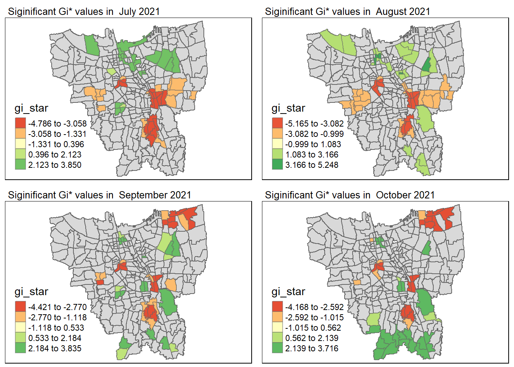
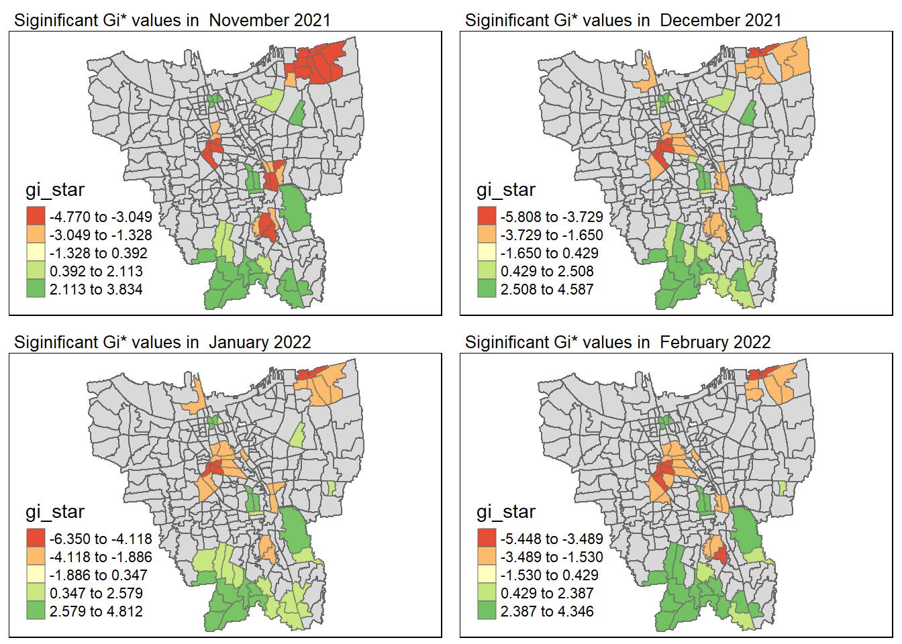
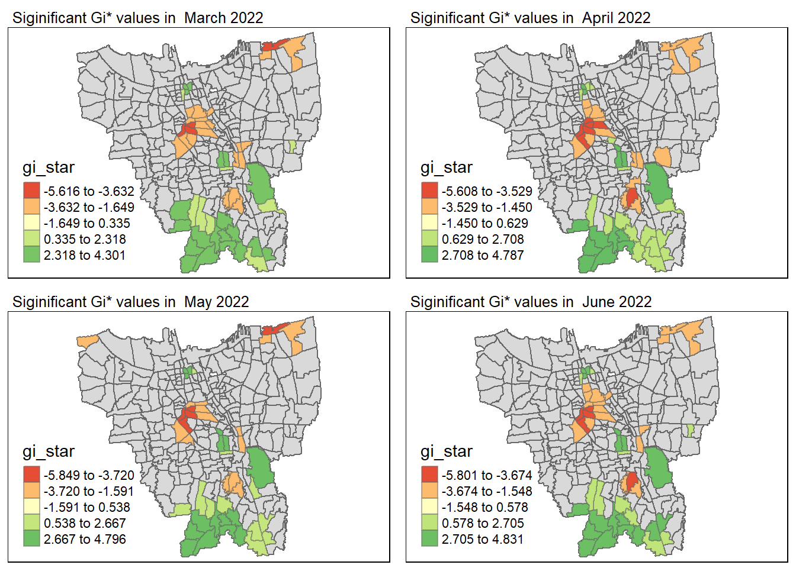
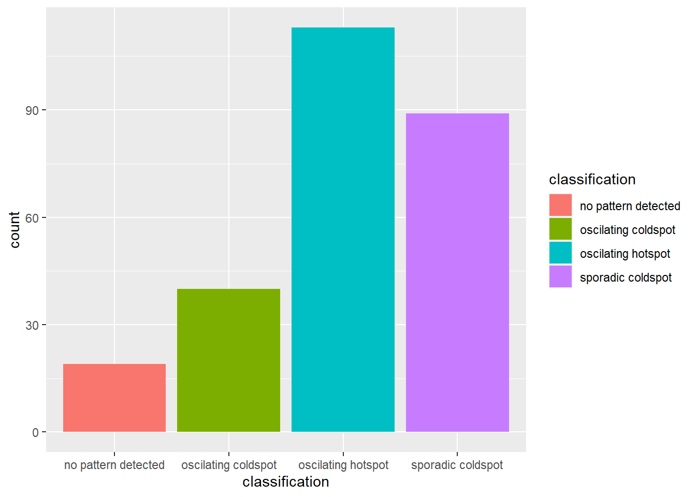

pacman::p_load(sf, tmap, kableExtra, tidyverse, sfdep, readxl, plyr, Kendall, plotly)Take-Home Excercise 02
1.0 Overview
As of the latest available data, Jakarta, the capital city of Indonesia, has been one of the hardest-hit regions in the country in terms of COVID-19 cases. The first confirmed case in Jakarta was reported on March 2, 2020, and since then, the number of cases has steadily increased.
As of February 24, 2023, the total number of confirmed cases in Jakarta has reached over 1.4 million, which is around 12% of the total cases in Indonesia. The number of active cases has decreased over the past few months, but there are still several thousand active cases in Jakarta.
The Jakarta government has implemented various measures to curb the spread of the virus, including social distancing rules, mandatory mask-wearing in public, and limiting public gatherings. The government has also conducted mass testing and contact tracing efforts to isolate those who have been infected.
Overall, the situation in Jakarta remains concerning, but the government’s efforts to control the spread of the virus have helped to mitigate the impact of the pandemic on the city.
2.0 Setup
2.1 Packages Used
sf : Used for importing geospatial data, assigning or transforming coordinate systems, and converting geospatial and aspatial data into a sf data frame
tidyverse : Used for transforming and better presentation of Data
tmap : Used for plotting static point patterns maps or interactive map
kableExtra : Used for table customization
sfdep : Used for functions creates not present in spdep.
readxl : Used for reading Microsoft Excel files
plyr : Used for splitting, applying and combining data in a “split-apply-combine” framework
Kendall : Used for computnig Kendall tau and is used for Mann Kendall Test
plotly : Used for creating interactive web-based visualisations
2.2 Datasets Used
| Type | Name | Format | Source | Description |
|---|---|---|---|---|
| Geospatial | DKI Jakarta Provincial Village Boundary | .shp | (https://www.indonesia-geospasial.com/2020/04/download-shapefile-shp-batas-desa.html) | It has the District level boundary data of DKI Jakarta of 2019 |
| Aspatial | District Based Vaccination History | .xlsx | (https://riwayat-file-vaksinasi-dki-jakarta-jakartagis.hub.arcgis.com/) | The muiliple excel files consists of all the vaccinations done at Village and District based. |
Things to Note for Aspatial Data:
To retrieve the monthly cumulative records for the COVID-19 cases in Jakarta, I took the data compiled on the last of every month (e.g - 31st July, 30tt August … ) from July 2021 to June 2022. I had started with taking the first of every month, however, i realized that the data for 1st March 2022 is actually of 2nd March 2022. And to have consistency in the data, I decided to use the last day of every month instead.
Further, the data consists of the following groups -
Vaccination of Elderly (Lansia)
Vaccination of Public Servant (Pelayan Publik)
Mutual Cooperation (Goton Royong) Vaccination
Vaccination of Health Workers (Tenaga Kesehatan)
Stage 3 (Tahapan) Vaccinations
Vaccination of Teenagers (Remaja)
3.0 Data Wrangling : Geospatial Data
3.1 Importing Geospatial Data
We will begin by importing Geospatial data into R by using the st_read() of sf package. It imports the BATAS_DESA_DESEMBER_2019_DUKCAPIL_DKI_JAKARTA shapefile into R as a polygon data frame. We provide 2 arguments - dsn (which is the data path) and layer (the shapefile name)
jakarta <- st_read(dsn="data/geospatial",
layer="BATAS_DESA_DESEMBER_2019_DUKCAPIL_DKI_JAKARTA")Reading layer `BATAS_DESA_DESEMBER_2019_DUKCAPIL_DKI_JAKARTA' from data source
`C:\mayurims\IS415-GAA\Take-Home_Ex\Take-Home_Ex02\data\geospatial'
using driver `ESRI Shapefile'
Simple feature collection with 269 features and 161 fields
Geometry type: MULTIPOLYGON
Dimension: XY
Bounding box: xmin: 106.3831 ymin: -6.370815 xmax: 106.9728 ymax: -5.184322
Geodetic CRS: WGS 84From the output message, we learn that:
Geometry type is multipolygon
269 features, 161 fields
Assigned CRS is WGS 84, the ‘World Geodetic System 1984’. This is not right, and will be rectified in 3.2.3 Verifying + Transforming Coordinates
3.2 Data Pre-processing
3.2.1 Dropping Invalid Dimensions
Since, we only have one dataframe, there are no invalid dimensions, and hence, this step is not required.
3.2.2 Missing Values
Now lets check if there are any missing values.
jakarta[rowSums(is.na(jakarta))!=0,]Simple feature collection with 2 features and 161 fields
Geometry type: MULTIPOLYGON
Dimension: XY
Bounding box: xmin: 106.8412 ymin: -6.154036 xmax: 106.8612 ymax: -6.144973
Geodetic CRS: WGS 84
OBJECT_ID KODE_DESA DESA KODE PROVINSI KAB_KOTA KECAMATAN
243 25645 31888888 DANAU SUNTER 318888 DKI JAKARTA <NA> <NA>
244 25646 31888888 DANAU SUNTER DLL 318888 DKI JAKARTA <NA> <NA>
DESA_KELUR JUMLAH_PEN JUMLAH_KK LUAS_WILAY KEPADATAN PERPINDAHA JUMLAH_MEN
243 <NA> 0 0 0 0 0 0
244 <NA> 0 0 0 0 0 0
PERUBAHAN WAJIB_KTP SILAM KRISTEN KHATOLIK HINDU BUDHA KONGHUCU KEPERCAYAA
243 0 0 0 0 0 0 0 0 0
244 0 0 0 0 0 0 0 0 0
PRIA WANITA BELUM_KAWI KAWIN CERAI_HIDU CERAI_MATI U0 U5 U10 U15 U20 U25
243 0 0 0 0 0 0 0 0 0 0 0 0
244 0 0 0 0 0 0 0 0 0 0 0 0
U30 U35 U40 U45 U50 U55 U60 U65 U70 U75 TIDAK_BELU BELUM_TAMA TAMAT_SD SLTP
243 0 0 0 0 0 0 0 0 0 0 0 0 0 0
244 0 0 0 0 0 0 0 0 0 0 0 0 0 0
SLTA DIPLOMA_I DIPLOMA_II DIPLOMA_IV STRATA_II STRATA_III BELUM_TIDA
243 0 0 0 0 0 0 0
244 0 0 0 0 0 0 0
APARATUR_P TENAGA_PEN WIRASWASTA PERTANIAN NELAYAN AGAMA_DAN PELAJAR_MA
243 0 0 0 0 0 0 0
244 0 0 0 0 0 0 0
TENAGA_KES PENSIUNAN LAINNYA GENERATED KODE_DES_1 BELUM_ MENGUR_ PELAJAR_
243 0 0 0 <NA> <NA> 0 0 0
244 0 0 0 <NA> <NA> 0 0 0
PENSIUNA_1 PEGAWAI_ TENTARA KEPOLISIAN PERDAG_ PETANI PETERN_ NELAYAN_1
243 0 0 0 0 0 0 0 0
244 0 0 0 0 0 0 0 0
INDUSTR_ KONSTR_ TRANSP_ KARYAW_ KARYAW1 KARYAW1_1 KARYAW1_12 BURUH BURUH_
243 0 0 0 0 0 0 0 0 0
244 0 0 0 0 0 0 0 0 0
BURUH1 BURUH1_1 PEMBANT_ TUKANG TUKANG_1 TUKANG_12 TUKANG__13 TUKANG__14
243 0 0 0 0 0 0 0 0
244 0 0 0 0 0 0 0 0
TUKANG__15 TUKANG__16 TUKANG__17 PENATA PENATA_ PENATA1_1 MEKANIK SENIMAN_
243 0 0 0 0 0 0 0 0
244 0 0 0 0 0 0 0 0
TABIB PARAJI_ PERANCA_ PENTER_ IMAM_M PENDETA PASTOR WARTAWAN USTADZ JURU_M
243 0 0 0 0 0 0 0 0 0 0
244 0 0 0 0 0 0 0 0 0 0
PROMOT ANGGOTA_ ANGGOTA1 ANGGOTA1_1 PRESIDEN WAKIL_PRES ANGGOTA1_2
243 0 0 0 0 0 0 0
244 0 0 0 0 0 0 0
ANGGOTA1_3 DUTA_B GUBERNUR WAKIL_GUBE BUPATI WAKIL_BUPA WALIKOTA WAKIL_WALI
243 0 0 0 0 0 0 0 0
244 0 0 0 0 0 0 0 0
ANGGOTA1_4 ANGGOTA1_5 DOSEN GURU PILOT PENGACARA_ NOTARIS ARSITEK AKUNTA_
243 0 0 0 0 0 0 0 0 0
244 0 0 0 0 0 0 0 0 0
KONSUL_ DOKTER BIDAN PERAWAT APOTEK_ PSIKIATER PENYIA_ PENYIA1 PELAUT
243 0 0 0 0 0 0 0 0 0
244 0 0 0 0 0 0 0 0 0
PENELITI SOPIR PIALAN PARANORMAL PEDAGA_ PERANG_ KEPALA_ BIARAW_ WIRASWAST_
243 0 0 0 0 0 0 0 0 0
244 0 0 0 0 0 0 0 0 0
LAINNYA_12 LUAS_DESA KODE_DES_3 DESA_KEL_1 KODE_12
243 0 0 <NA> <NA> 0
244 0 0 <NA> <NA> 0
geometry
243 MULTIPOLYGON (((106.8612 -6...
244 MULTIPOLYGON (((106.8504 -6...We can see that there are 2 rows containing ‘NA’ values. However, since the data is big, we need to find the columns with missing NA values so that we can work on it.
names(which(colSums(is.na(jakarta))>0))[1] "KAB_KOTA" "KECAMATAN" "DESA_KELUR" "GENERATED" "KODE_DES_1"
[6] "KODE_DES_3" "DESA_KEL_1"We can see that there are two particular rows with missing values for KAB_KOTA (City), KECAMATAN (District) and DESA_KELUR (Village).
Hence, we remove rows with NA value in DESA_KELUR. There are other columns with NA present as well, however, since we are only looking at the sub-district level, it is most appropriate to remove DESA_KELUR
jakarta <- na.omit(jakarta,c("DESA_KELUR"))Lets double check if the rows with missing values are removed.
jakarta[rowSums(is.na(jakarta))!=0,]Simple feature collection with 0 features and 161 fields
Bounding box: xmin: NA ymin: NA xmax: NA ymax: NA
Geodetic CRS: WGS 84
[1] OBJECT_ID KODE_DESA DESA KODE PROVINSI KAB_KOTA
[7] KECAMATAN DESA_KELUR JUMLAH_PEN JUMLAH_KK LUAS_WILAY KEPADATAN
[13] PERPINDAHA JUMLAH_MEN PERUBAHAN WAJIB_KTP SILAM KRISTEN
[19] KHATOLIK HINDU BUDHA KONGHUCU KEPERCAYAA PRIA
[25] WANITA BELUM_KAWI KAWIN CERAI_HIDU CERAI_MATI U0
[31] U5 U10 U15 U20 U25 U30
[37] U35 U40 U45 U50 U55 U60
[43] U65 U70 U75 TIDAK_BELU BELUM_TAMA TAMAT_SD
[49] SLTP SLTA DIPLOMA_I DIPLOMA_II DIPLOMA_IV STRATA_II
[55] STRATA_III BELUM_TIDA APARATUR_P TENAGA_PEN WIRASWASTA PERTANIAN
[61] NELAYAN AGAMA_DAN PELAJAR_MA TENAGA_KES PENSIUNAN LAINNYA
[67] GENERATED KODE_DES_1 BELUM_ MENGUR_ PELAJAR_ PENSIUNA_1
[73] PEGAWAI_ TENTARA KEPOLISIAN PERDAG_ PETANI PETERN_
[79] NELAYAN_1 INDUSTR_ KONSTR_ TRANSP_ KARYAW_ KARYAW1
[85] KARYAW1_1 KARYAW1_12 BURUH BURUH_ BURUH1 BURUH1_1
[91] PEMBANT_ TUKANG TUKANG_1 TUKANG_12 TUKANG__13 TUKANG__14
[97] TUKANG__15 TUKANG__16 TUKANG__17 PENATA PENATA_ PENATA1_1
[103] MEKANIK SENIMAN_ TABIB PARAJI_ PERANCA_ PENTER_
[109] IMAM_M PENDETA PASTOR WARTAWAN USTADZ JURU_M
[115] PROMOT ANGGOTA_ ANGGOTA1 ANGGOTA1_1 PRESIDEN WAKIL_PRES
[121] ANGGOTA1_2 ANGGOTA1_3 DUTA_B GUBERNUR WAKIL_GUBE BUPATI
[127] WAKIL_BUPA WALIKOTA WAKIL_WALI ANGGOTA1_4 ANGGOTA1_5 DOSEN
[133] GURU PILOT PENGACARA_ NOTARIS ARSITEK AKUNTA_
[139] KONSUL_ DOKTER BIDAN PERAWAT APOTEK_ PSIKIATER
[145] PENYIA_ PENYIA1 PELAUT PENELITI SOPIR PIALAN
[151] PARANORMAL PEDAGA_ PERANG_ KEPALA_ BIARAW_ WIRASWAST_
[157] LAINNYA_12 LUAS_DESA KODE_DES_3 DESA_KEL_1 KODE_12 geometry
<0 rows> (or 0-length row.names)3.2.3 Verifying + Transforming Coordinates
Now, we use the st_crs() to check the coordinate system of the data. As we can see, it uses the WGS 84 coordinate system. The data is using a Geographic projected system, however, this is system is not appropriate since we need to use distance and area measures.
st_crs(jakarta)Coordinate Reference System:
User input: WGS 84
wkt:
GEOGCRS["WGS 84",
DATUM["World Geodetic System 1984",
ELLIPSOID["WGS 84",6378137,298.257223563,
LENGTHUNIT["metre",1]]],
PRIMEM["Greenwich",0,
ANGLEUNIT["degree",0.0174532925199433]],
CS[ellipsoidal,2],
AXIS["latitude",north,
ORDER[1],
ANGLEUNIT["degree",0.0174532925199433]],
AXIS["longitude",east,
ORDER[2],
ANGLEUNIT["degree",0.0174532925199433]],
ID["EPSG",4326]]Hence, we use st_transform() and not st_set_crs() as st_set_crs() assigns the EPSG code to the data frame. And we need to transform the data frame from geographic to projected coordinate system. We will be using crs=23845 (found from the EPSG for Indonesia).
jakarta <- st_transform(jakarta, 23845)Lets double check if CRS has been assigned
st_crs(jakarta)Coordinate Reference System:
User input: EPSG:23845
wkt:
PROJCRS["DGN95 / Indonesia TM-3 zone 54.1",
BASEGEOGCRS["DGN95",
DATUM["Datum Geodesi Nasional 1995",
ELLIPSOID["WGS 84",6378137,298.257223563,
LENGTHUNIT["metre",1]]],
PRIMEM["Greenwich",0,
ANGLEUNIT["degree",0.0174532925199433]],
ID["EPSG",4755]],
CONVERSION["Indonesia TM-3 zone 54.1",
METHOD["Transverse Mercator",
ID["EPSG",9807]],
PARAMETER["Latitude of natural origin",0,
ANGLEUNIT["degree",0.0174532925199433],
ID["EPSG",8801]],
PARAMETER["Longitude of natural origin",139.5,
ANGLEUNIT["degree",0.0174532925199433],
ID["EPSG",8802]],
PARAMETER["Scale factor at natural origin",0.9999,
SCALEUNIT["unity",1],
ID["EPSG",8805]],
PARAMETER["False easting",200000,
LENGTHUNIT["metre",1],
ID["EPSG",8806]],
PARAMETER["False northing",1500000,
LENGTHUNIT["metre",1],
ID["EPSG",8807]]],
CS[Cartesian,2],
AXIS["easting (X)",east,
ORDER[1],
LENGTHUNIT["metre",1]],
AXIS["northing (Y)",north,
ORDER[2],
LENGTHUNIT["metre",1]],
USAGE[
SCOPE["Cadastre."],
AREA["Indonesia - onshore east of 138°E."],
BBOX[-9.19,138,-1.49,141.01]],
ID["EPSG",23845]]3.2.3 Removal of Outer Islands
Now that we have done our basic pre-processing, lets quickly visualize the data
plot(st_geometry(jakarta))
As we can see from the diagram, jakarta includes both mainland and outer islands. And since we don’t require the outer islands (as per the requirements), we can remove them.
DIAGRAMM EXPLAINING THE DATAA
We know that the date is grouped by KAB_KOTA (City), KECAMATAN (Sub-District) and DESA_KELUR (Village). Now, lets plot the map and see how we can use KAB_KOTA to remove the outer islands.
tm_shape(jakarta) +
tm_polygons("KAB_KOTA")
From the map, we can see that all the cities in Jakarta start with ‘Jakarta’ as their prefix and hence, ‘Kepulauan Seribu’ are the other outer islands. When translated in English, the name means ‘Thousand Islands’. Now we know what to remove, and we shall proceed with that.
jakarta <- filter(jakarta, KAB_KOTA != "KEPULAUAN SERIBU")Now, lets double check if the outer islands have been removed.
tm_shape(jakarta) +
tm_polygons("KAB_KOTA")
3.2.4 Retaining first 9 fields of jakarta
Additionally, the assignment only requires us to retain the relevant fields - which are the first 9 fields.
jakarta <- jakarta[, 0:9]3.2.5 Renaming Columns with Translation
Since the columns names are in Indonesian, lets rename them to English for better ease of use.
jakarta <- jakarta %>%
dplyr::rename(
Object_ID=OBJECT_ID,
Village_Code=KODE_DESA,
Code=KODE,
Village=DESA,
Province=PROVINSI,
City=KAB_KOTA,
District=KECAMATAN,
Sub_District=DESA_KELUR,
Total_Population=JUMLAH_PEN
)4.0 Data Wrangling : Aspatial Data
4.1 Pre-Importing EDA
For this assignment, we will be working on data from July 2021 to June 2022, as a result we will be having several excel files. Thus, it is safer to preview the data first and check for any discrepancies, before compiling all the data.
jul2021 <- read_xlsx("data/aspatial/Data Vaksinasi Berbasis Kelurahan (31 Juli 2021).xlsx")
glimpse(jul2021)Rows: 268
Columns: 27
$ `KODE KELURAHAN` <chr> NA, "3172051003", "317304…
$ `WILAYAH KOTA` <chr> NA, "JAKARTA UTARA", "JAK…
$ KECAMATAN <chr> NA, "PADEMANGAN", "TAMBOR…
$ KELURAHAN <chr> "TOTAL", "ANCOL", "ANGKE"…
$ SASARAN <dbl> 8941211, 23947, 29381, 29…
$ `BELUM VAKSIN` <dbl> 4441501, 12333, 13875, 18…
$ `JUMLAH\r\nDOSIS 1` <dbl> 4499710, 11614, 15506, 10…
$ `JUMLAH\r\nDOSIS 2` <dbl> 1663218, 4181, 4798, 3658…
$ `TOTAL VAKSIN\r\nDIBERIKAN` <dbl> 6162928, 15795, 20304, 14…
$ `LANSIA\r\nDOSIS 1` <dbl> 502579, 1230, 2012, 865, …
$ `LANSIA\r\nDOSIS 2` <dbl> 440910, 1069, 1729, 701, …
$ `LANSIA TOTAL \r\nVAKSIN DIBERIKAN` <dbl> 943489, 2299, 3741, 1566,…
$ `PELAYAN PUBLIK\r\nDOSIS 1` <dbl> 1052883, 3333, 2586, 2837…
$ `PELAYAN PUBLIK\r\nDOSIS 2` <dbl> 666009, 2158, 1374, 1761,…
$ `PELAYAN PUBLIK TOTAL\r\nVAKSIN DIBERIKAN` <dbl> 1718892, 5491, 3960, 4598…
$ `GOTONG ROYONG\r\nDOSIS 1` <dbl> 56660, 78, 122, 174, 71, …
$ `GOTONG ROYONG\r\nDOSIS 2` <dbl> 38496, 51, 84, 106, 57, 7…
$ `GOTONG ROYONG TOTAL\r\nVAKSIN DIBERIKAN` <dbl> 95156, 129, 206, 280, 128…
$ `TENAGA KESEHATAN\r\nDOSIS 1` <dbl> 76397, 101, 90, 215, 73, …
$ `TENAGA KESEHATAN\r\nDOSIS 2` <dbl> 67484, 91, 82, 192, 67, 3…
$ `TENAGA KESEHATAN TOTAL\r\nVAKSIN DIBERIKAN` <dbl> 143881, 192, 172, 407, 14…
$ `TAHAPAN 3\r\nDOSIS 1` <dbl> 2279398, 5506, 9012, 5408…
$ `TAHAPAN 3\r\nDOSIS 2` <dbl> 446028, 789, 1519, 897, 4…
$ `TAHAPAN 3 TOTAL\r\nVAKSIN DIBERIKAN` <dbl> 2725426, 6295, 10531, 630…
$ `REMAJA\r\nDOSIS 1` <dbl> 531793, 1366, 1684, 1261,…
$ `REMAJA\r\nDOSIS 2` <dbl> 4291, 23, 10, 1, 1, 8, 6,…
$ `REMAJA TOTAL\r\nVAKSIN DIBERIKAN` <dbl> 536084, 1389, 1694, 1262,…The above output shows that there are no duplicates. So we will check for all of them just to ensure that there are no duplicates and no inconsistencies
August 2021
aug2021 <- read_xlsx("data/aspatial/Data Vaksinasi Berbasis Kelurahan (31 Agustus 2021).xlsx")
glimpse(aug2021)Rows: 268
Columns: 27
$ `KODE KELURAHAN` <chr> NA, "3172051003", "317304…
$ `WILAYAH KOTA` <chr> NA, "JAKARTA UTARA", "JAK…
$ KECAMATAN <chr> NA, "PADEMANGAN", "TAMBOR…
$ KELURAHAN <chr> "TOTAL", "ANCOL", "ANGKE"…
$ SASARAN <dbl> 8941211, 23947, 29381, 29…
$ `BELUM VAKSIN` <dbl> 3277484, 9191, 10400, 125…
$ `JUMLAH\r\nDOSIS 1` <dbl> 5663727, 14756, 18981, 16…
$ `JUMLAH\r\nDOSIS 2` <dbl> 3412906, 8935, 10470, 776…
$ `TOTAL VAKSIN\r\nDIBERIKAN` <dbl> 9076633, 23691, 29451, 24…
$ `LANSIA\r\nDOSIS 1` <dbl> 535001, 1300, 2104, 1043,…
$ `LANSIA\r\nDOSIS 2` <dbl> 468678, 1140, 1849, 780, …
$ `LANSIA TOTAL \r\nVAKSIN DIBERIKAN` <dbl> 1003679, 2440, 3953, 1823…
$ `PELAYAN PUBLIK\r\nDOSIS 1` <dbl> 1393352, 4194, 3643, 4293…
$ `PELAYAN PUBLIK\r\nDOSIS 2` <dbl> 1007921, 3135, 2519, 2548…
$ `PELAYAN PUBLIK TOTAL\r\nVAKSIN DIBERIKAN` <dbl> 2401273, 7329, 6162, 6841…
$ `GOTONG ROYONG\r\nDOSIS 1` <dbl> 65340, 89, 137, 188, 80, …
$ `GOTONG ROYONG\r\nDOSIS 2` <dbl> 53995, 77, 119, 163, 71, …
$ `GOTONG ROYONG TOTAL\r\nVAKSIN DIBERIKAN` <dbl> 119335, 166, 256, 351, 15…
$ `TENAGA KESEHATAN\r\nDOSIS 1` <dbl> 79502, 106, 92, 229, 78, …
$ `TENAGA KESEHATAN\r\nDOSIS 2` <dbl> 72588, 96, 83, 203, 74, 3…
$ `TENAGA KESEHATAN TOTAL\r\nVAKSIN DIBERIKAN` <dbl> 152090, 202, 175, 432, 15…
$ `TAHAPAN 3\r\nDOSIS 1` <dbl> 2941837, 7385, 11033, 872…
$ `TAHAPAN 3\r\nDOSIS 2` <dbl> 1377349, 3277, 4541, 3010…
$ `TAHAPAN 3 TOTAL\r\nVAKSIN DIBERIKAN` <dbl> 4319186, 10662, 15574, 11…
$ `REMAJA\r\nDOSIS 1` <dbl> 648695, 1682, 1972, 2090,…
$ `REMAJA\r\nDOSIS 2` <dbl> 432375, 1210, 1359, 1062,…
$ `REMAJA TOTAL\r\nVAKSIN DIBERIKAN` <dbl> 1081070, 2892, 3331, 3152…September 2021
sep2021 <- read_xlsx("data/aspatial/Data Vaksinasi Berbasis Kelurahan (30 September 2021).xlsx")
glimpse(sep2021)Rows: 268
Columns: 27
$ `KODE KELURAHAN` <chr> NA, "3172051003", "317304…
$ `WILAYAH KOTA` <chr> NA, "JAKARTA UTARA", "JAK…
$ KECAMATAN <chr> NA, "PADEMANGAN", "TAMBOR…
$ KELURAHAN <chr> "TOTAL", "ANCOL", "ANGKE"…
$ SASARAN <dbl> 8941211, 23947, 29381, 29…
$ `BELUM VAKSIN` <dbl> 2235772, 6688, 7581, 8708…
$ `JUMLAH\r\nDOSIS 1` <dbl> 6705439, 17259, 21800, 20…
$ `JUMLAH\r\nDOSIS 2` <dbl> 5171697, 13376, 16438, 14…
$ `TOTAL VAKSIN\r\nDIBERIKAN` <dbl> 11877136, 30635, 38238, 3…
$ `LANSIA\r\nDOSIS 1` <dbl> 587215, 1417, 2270, 1263,…
$ `LANSIA\r\nDOSIS 2` <dbl> 518944, 1263, 2033, 988, …
$ `LANSIA TOTAL \r\nVAKSIN DIBERIKAN` <dbl> 1106159, 2680, 4303, 2251…
$ `PELAYAN PUBLIK\r\nDOSIS 1` <dbl> 1468382, 3938, 3883, 4540…
$ `PELAYAN PUBLIK\r\nDOSIS 2` <dbl> 1305200, 3454, 3356, 3903…
$ `PELAYAN PUBLIK TOTAL\r\nVAKSIN DIBERIKAN` <dbl> 2773582, 7392, 7239, 8443…
$ `GOTONG ROYONG\r\nDOSIS 1` <dbl> 84049, 158, 173, 248, 100…
$ `GOTONG ROYONG\r\nDOSIS 2` <dbl> 75657, 148, 157, 229, 91,…
$ `GOTONG ROYONG TOTAL\r\nVAKSIN DIBERIKAN` <dbl> 159706, 306, 330, 477, 19…
$ `TENAGA KESEHATAN\r\nDOSIS 1` <dbl> 112296, 140, 135, 329, 11…
$ `TENAGA KESEHATAN\r\nDOSIS 2` <dbl> 104381, 124, 125, 300, 11…
$ `TENAGA KESEHATAN TOTAL\r\nVAKSIN DIBERIKAN` <dbl> 216677, 264, 260, 629, 23…
$ `TAHAPAN 3\r\nDOSIS 1` <dbl> 3677943, 9564, 12969, 114…
$ `TAHAPAN 3\r\nDOSIS 2` <dbl> 2548057, 6788, 8944, 7023…
$ `TAHAPAN 3 TOTAL\r\nVAKSIN DIBERIKAN` <dbl> 6226000, 16352, 21913, 18…
$ `REMAJA\r\nDOSIS 1` <dbl> 775554, 2042, 2370, 2510,…
$ `REMAJA\r\nDOSIS 2` <dbl> 619458, 1599, 1823, 1969,…
$ `REMAJA TOTAL\r\nVAKSIN DIBERIKAN` <dbl> 1395012, 3641, 4193, 4479…October 2021
oct2021 <- read_xlsx("data/aspatial/Data Vaksinasi Berbasis Kelurahan (31 Oktober 2021).xlsx")
glimpse(oct2021)Rows: 268
Columns: 27
$ `KODE KELURAHAN` <chr> NA, "3172051003", "317304…
$ `WILAYAH KOTA` <chr> NA, "JAKARTA UTARA", "JAK…
$ KECAMATAN <chr> NA, "PADEMANGAN", "TAMBOR…
$ KELURAHAN <chr> "TOTAL", "ANCOL", "ANGKE"…
$ SASARAN <dbl> 8941211, 23947, 29381, 29…
$ `BELUM VAKSIN` <dbl> 1880524, 5991, 6557, 7586…
$ `JUMLAH\r\nDOSIS 1` <dbl> 7060687, 17956, 22824, 21…
$ `JUMLAH\r\nDOSIS 2` <dbl> 5729001, 14504, 18185, 16…
$ `TOTAL VAKSIN\r\nDIBERIKAN` <dbl> 12789688, 32460, 41009, 3…
$ `LANSIA\r\nDOSIS 1` <dbl> 608940, 1447, 2336, 1322,…
$ `LANSIA\r\nDOSIS 2` <dbl> 543483, 1296, 2104, 1104,…
$ `LANSIA TOTAL \r\nVAKSIN DIBERIKAN` <dbl> 1152423, 2743, 4440, 2426…
$ `PELAYAN PUBLIK\r\nDOSIS 1` <dbl> 1484292, 3972, 3917, 4595…
$ `PELAYAN PUBLIK\r\nDOSIS 2` <dbl> 1349105, 3555, 3465, 4072…
$ `PELAYAN PUBLIK TOTAL\r\nVAKSIN DIBERIKAN` <dbl> 2833397, 7527, 7382, 8667…
$ `GOTONG ROYONG\r\nDOSIS 1` <dbl> 86323, 165, 175, 259, 101…
$ `GOTONG ROYONG\r\nDOSIS 2` <dbl> 81721, 160, 168, 245, 96,…
$ `GOTONG ROYONG TOTAL\r\nVAKSIN DIBERIKAN` <dbl> 168044, 325, 343, 504, 19…
$ `TENAGA KESEHATAN\r\nDOSIS 1` <dbl> 113911, 140, 136, 338, 12…
$ `TENAGA KESEHATAN\r\nDOSIS 2` <dbl> 107383, 128, 128, 310, 12…
$ `TENAGA KESEHATAN TOTAL\r\nVAKSIN DIBERIKAN` <dbl> 221294, 268, 264, 648, 24…
$ `TAHAPAN 3\r\nDOSIS 1` <dbl> 3948804, 10101, 13744, 12…
$ `TAHAPAN 3\r\nDOSIS 2` <dbl> 2949023, 7567, 10266, 849…
$ `TAHAPAN 3 TOTAL\r\nVAKSIN DIBERIKAN` <dbl> 6897827, 17668, 24010, 20…
$ `REMAJA\r\nDOSIS 1` <dbl> 818417, 2131, 2516, 2672,…
$ `REMAJA\r\nDOSIS 2` <dbl> 698286, 1798, 2054, 2220,…
$ `REMAJA TOTAL\r\nVAKSIN DIBERIKAN` <dbl> 1516703, 3929, 4570, 4892…November 2021
nov2021 <- read_xlsx("data/aspatial/Data Vaksinasi Berbasis Kelurahan (30 November 2021).xlsx")
glimpse(nov2021)Rows: 268
Columns: 27
$ `KODE KELURAHAN` <chr> NA, "3172051003", "317304…
$ `WILAYAH KOTA` <chr> NA, "JAKARTA UTARA", "JAK…
$ KECAMATAN <chr> NA, "PADEMANGAN", "TAMBOR…
$ KELURAHAN <chr> "TOTAL", "ANCOL", "ANGKE"…
$ SASARAN <dbl> 8941211, 23947, 29381, 29…
$ `BELUM VAKSIN` <dbl> 1723821, 5527, 5986, 6802…
$ `JUMLAH\r\nDOSIS 1` <dbl> 7217390, 18420, 23395, 22…
$ `JUMLAH\r\nDOSIS 2` <dbl> 6172636, 15466, 19404, 18…
$ `TOTAL VAKSIN\r\nDIBERIKAN` <dbl> 13390026, 33886, 42799, 4…
$ `LANSIA\r\nDOSIS 1` <dbl> 624751, 1473, 2391, 1385,…
$ `LANSIA\r\nDOSIS 2` <dbl> 571830, 1351, 2192, 1224,…
$ `LANSIA TOTAL \r\nVAKSIN DIBERIKAN` <dbl> 1196581, 2824, 4583, 2609…
$ `PELAYAN PUBLIK\r\nDOSIS 1` <dbl> 1487961, 3980, 3926, 4614…
$ `PELAYAN PUBLIK\r\nDOSIS 2` <dbl> 1369705, 3601, 3516, 4146…
$ `PELAYAN PUBLIK TOTAL\r\nVAKSIN DIBERIKAN` <dbl> 2857666, 7581, 7442, 8760…
$ `GOTONG ROYONG\r\nDOSIS 1` <dbl> 86710, 169, 176, 259, 101…
$ `GOTONG ROYONG\r\nDOSIS 2` <dbl> 83506, 163, 172, 252, 98,…
$ `GOTONG ROYONG TOTAL\r\nVAKSIN DIBERIKAN` <dbl> 170216, 332, 348, 511, 19…
$ `TENAGA KESEHATAN\r\nDOSIS 1` <dbl> 114292, 140, 135, 341, 12…
$ `TENAGA KESEHATAN\r\nDOSIS 2` <dbl> 109221, 128, 128, 323, 12…
$ `TENAGA KESEHATAN TOTAL\r\nVAKSIN DIBERIKAN` <dbl> 223513, 268, 263, 664, 24…
$ `TAHAPAN 3\r\nDOSIS 1` <dbl> 4069550, 10473, 14182, 12…
$ `TAHAPAN 3\r\nDOSIS 2` <dbl> 3304266, 8329, 11215, 978…
$ `TAHAPAN 3 TOTAL\r\nVAKSIN DIBERIKAN` <dbl> 7373816, 18802, 25397, 22…
$ `REMAJA\r\nDOSIS 1` <dbl> 834126, 2185, 2585, 2733,…
$ `REMAJA\r\nDOSIS 2` <dbl> 734108, 1894, 2181, 2355,…
$ `REMAJA TOTAL\r\nVAKSIN DIBERIKAN` <dbl> 1568234, 4079, 4766, 5088…December 2021
dec2021 <- read_xlsx("data/aspatial/Data Vaksinasi Berbasis Kelurahan (31 Desember 2021).xlsx")
glimpse(dec2021)Rows: 268
Columns: 27
$ `KODE KELURAHAN` <chr> NA, "3172051003", "317304…
$ `WILAYAH KOTA` <chr> NA, "JAKARTA UTARA", "JAK…
$ KECAMATAN <chr> NA, "PADEMANGAN", "TAMBOR…
$ KELURAHAN <chr> "TOTAL", "ANCOL", "ANGKE"…
$ SASARAN <dbl> 8941211, 23947, 29381, 29…
$ `BELUM VAKSIN` <dbl> 1623736, 5062, 5626, 6335…
$ `JUMLAH\r\nDOSIS 1` <dbl> 7317475, 18885, 23755, 22…
$ `JUMLAH\r\nDOSIS 2` <dbl> 6370175, 15996, 20026, 18…
$ `TOTAL VAKSIN\r\nDIBERIKAN` <dbl> 13687650, 34881, 43781, 4…
$ `LANSIA\r\nDOSIS 1` <dbl> 634516, 1520, 2427, 1418,…
$ `LANSIA\r\nDOSIS 2` <dbl> 586624, 1375, 2247, 1294,…
$ `LANSIA TOTAL \r\nVAKSIN DIBERIKAN` <dbl> 1221140, 2895, 4674, 2712…
$ `PELAYAN PUBLIK\r\nDOSIS 1` <dbl> 1485857, 3981, 3922, 4603…
$ `PELAYAN PUBLIK\r\nDOSIS 2` <dbl> 1372180, 3607, 3521, 4153…
$ `PELAYAN PUBLIK TOTAL\r\nVAKSIN DIBERIKAN` <dbl> 2858037, 7588, 7443, 8756…
$ `GOTONG ROYONG\r\nDOSIS 1` <dbl> 86905, 169, 176, 260, 101…
$ `GOTONG ROYONG\r\nDOSIS 2` <dbl> 83995, 164, 174, 253, 99,…
$ `GOTONG ROYONG TOTAL\r\nVAKSIN DIBERIKAN` <dbl> 170900, 333, 350, 513, 20…
$ `TENAGA KESEHATAN\r\nDOSIS 1` <dbl> 114612, 140, 136, 345, 12…
$ `TENAGA KESEHATAN\r\nDOSIS 2` <dbl> 110119, 128, 129, 327, 12…
$ `TENAGA KESEHATAN TOTAL\r\nVAKSIN DIBERIKAN` <dbl> 224731, 268, 265, 672, 24…
$ `TAHAPAN 3\r\nDOSIS 1` <dbl> 4150113, 10841, 14450, 13…
$ `TAHAPAN 3\r\nDOSIS 2` <dbl> 3467714, 8782, 11715, 104…
$ `TAHAPAN 3 TOTAL\r\nVAKSIN DIBERIKAN` <dbl> 7617827, 19623, 26165, 23…
$ `REMAJA\r\nDOSIS 1` <dbl> 845472, 2234, 2644, 2783,…
$ `REMAJA\r\nDOSIS 2` <dbl> 749543, 1940, 2240, 2401,…
$ `REMAJA TOTAL\r\nVAKSIN DIBERIKAN` <dbl> 1595015, 4174, 4884, 5184…January 2021
jan2022 <- read_xlsx("data/aspatial/Data Vaksinasi Berbasis Kelurahan (31 Januari 2022).xlsx")
glimpse(jan2022)Rows: 268
Columns: 27
$ `KODE KELURAHAN` <chr> NA, "3172051003", "317304…
$ `WILAYAH KOTA` <chr> NA, "JAKARTA UTARA", "JAK…
$ KECAMATAN <chr> NA, "PADEMANGAN", "TAMBOR…
$ KELURAHAN <chr> "TOTAL", "ANCOL", "ANGKE"…
$ SASARAN <dbl> 8941211, 23947, 29381, 29…
$ `BELUM VAKSIN` <dbl> 1538221, 4647, 5388, 5967…
$ `JUMLAH\r\nDOSIS 1` <dbl> 7402990, 19300, 23993, 23…
$ `JUMLAH\r\nDOSIS 2` <dbl> 6516678, 16477, 20463, 19…
$ `TOTAL VAKSIN\r\nDIBERIKAN` <dbl> 13919668, 35777, 44456, 4…
$ `LANSIA\r\nDOSIS 1` <dbl> 644280, 1564, 2459, 1446,…
$ `LANSIA\r\nDOSIS 2` <dbl> 598309, 1399, 2291, 1327,…
$ `LANSIA TOTAL \r\nVAKSIN DIBERIKAN` <dbl> 1242589, 2963, 4750, 2773…
$ `PELAYAN PUBLIK\r\nDOSIS 1` <dbl> 1478564, 3971, 3900, 4592…
$ `PELAYAN PUBLIK\r\nDOSIS 2` <dbl> 1369268, 3604, 3506, 4158…
$ `PELAYAN PUBLIK TOTAL\r\nVAKSIN DIBERIKAN` <dbl> 2847832, 7575, 7406, 8750…
$ `GOTONG ROYONG\r\nDOSIS 1` <dbl> 88073, 177, 178, 262, 102…
$ `GOTONG ROYONG\r\nDOSIS 2` <dbl> 85942, 171, 179, 260, 99,…
$ `GOTONG ROYONG TOTAL\r\nVAKSIN DIBERIKAN` <dbl> 174015, 348, 357, 522, 20…
$ `TENAGA KESEHATAN\r\nDOSIS 1` <dbl> 115123, 140, 135, 348, 12…
$ `TENAGA KESEHATAN\r\nDOSIS 2` <dbl> 111364, 130, 130, 331, 12…
$ `TENAGA KESEHATAN TOTAL\r\nVAKSIN DIBERIKAN` <dbl> 226487, 270, 265, 679, 24…
$ `TAHAPAN 3\r\nDOSIS 1` <dbl> 4215232, 11158, 14620, 13…
$ `TAHAPAN 3\r\nDOSIS 2` <dbl> 3579348, 9173, 12024, 109…
$ `TAHAPAN 3 TOTAL\r\nVAKSIN DIBERIKAN` <dbl> 7794580, 20331, 26644, 24…
$ `REMAJA\r\nDOSIS 1` <dbl> 861718, 2290, 2701, 2840,…
$ `REMAJA\r\nDOSIS 2` <dbl> 772447, 2000, 2333, 2488,…
$ `REMAJA TOTAL\r\nVAKSIN DIBERIKAN` <dbl> 1634165, 4290, 5034, 5328…February 2022
feb2022 <- read_xlsx("data/aspatial/Data Vaksinasi Berbasis Kelurahan (27 Februari 2022).xlsx")
glimpse(feb2022)Rows: 268
Columns: 27
$ `KODE KELURAHAN` <chr> NA, "3172051003", "317304…
$ `WILAYAH KOTA` <chr> NA, "JAKARTA UTARA", "JAK…
$ KECAMATAN <chr> NA, "PADEMANGAN", "TAMBOR…
$ KELURAHAN <chr> "TOTAL", "ANCOL", "ANGKE"…
$ SASARAN <dbl> 8941211, 23947, 29381, 29…
$ `BELUM VAKSIN` <dbl> 1517196, 4592, 5319, 5903…
$ `JUMLAH\r\nDOSIS 1` <dbl> 7424015, 19355, 24062, 23…
$ `JUMLAH\r\nDOSIS 2` <dbl> 6590380, 16687, 20738, 19…
$ `TOTAL VAKSIN\r\nDIBERIKAN` <dbl> 14014395, 36042, 44800, 4…
$ `LANSIA\r\nDOSIS 1` <dbl> 646481, 1567, 2465, 1451,…
$ `LANSIA\r\nDOSIS 2` <dbl> 604751, 1418, 2336, 1348,…
$ `LANSIA TOTAL \r\nVAKSIN DIBERIKAN` <dbl> 1251232, 2985, 4801, 2799…
$ `PELAYAN PUBLIK\r\nDOSIS 1` <dbl> 1478545, 3971, 3899, 4590…
$ `PELAYAN PUBLIK\r\nDOSIS 2` <dbl> 1371190, 3614, 3512, 4161…
$ `PELAYAN PUBLIK TOTAL\r\nVAKSIN DIBERIKAN` <dbl> 2849735, 7585, 7411, 8751…
$ `GOTONG ROYONG\r\nDOSIS 1` <dbl> 88088, 178, 178, 262, 102…
$ `GOTONG ROYONG\r\nDOSIS 2` <dbl> 86046, 171, 179, 260, 99,…
$ `GOTONG ROYONG TOTAL\r\nVAKSIN DIBERIKAN` <dbl> 174134, 349, 357, 522, 20…
$ `TENAGA KESEHATAN\r\nDOSIS 1` <dbl> 115186, 140, 135, 348, 12…
$ `TENAGA KESEHATAN\r\nDOSIS 2` <dbl> 111623, 130, 130, 331, 12…
$ `TENAGA KESEHATAN TOTAL\r\nVAKSIN DIBERIKAN` <dbl> 226809, 270, 265, 679, 24…
$ `TAHAPAN 3\r\nDOSIS 1` <dbl> 4232389, 11200, 14670, 13…
$ `TAHAPAN 3\r\nDOSIS 2` <dbl> 3638187, 9327, 12227, 111…
$ `TAHAPAN 3 TOTAL\r\nVAKSIN DIBERIKAN` <dbl> 7870576, 20527, 26897, 24…
$ `REMAJA\r\nDOSIS 1` <dbl> 863326, 2299, 2715, 2845,…
$ `REMAJA\r\nDOSIS 2` <dbl> 778583, 2027, 2354, 2512,…
$ `REMAJA TOTAL\r\nVAKSIN DIBERIKAN` <dbl> 1641909, 4326, 5069, 5357…March 2022
mar2022 <- read_xlsx("data/aspatial/Data Vaksinasi Berbasis Kelurahan (31 Maret 2022).xlsx")
glimpse(mar2022)Rows: 268
Columns: 34
$ `KODE KELURAHAN` <chr> NA, "3172051003", "317304…
$ `WILAYAH KOTA` <chr> NA, "JAKARTA UTARA", "JAK…
$ KECAMATAN <chr> NA, "PADEMANGAN", "TAMBOR…
$ KELURAHAN <chr> "TOTAL", "ANCOL", "ANGKE"…
$ SASARAN <dbl> 8941211, 23947, 29381, 29…
$ `BELUM VAKSIN` <dbl> 1482471, 4522, 5186, 5780…
$ `JUMLAH\r\nDOSIS 1` <dbl> 7458740, 19425, 24195, 23…
$ `JUMLAH\r\nDOSIS 2` <dbl> 6682911, 16909, 21000, 20…
$ `JUMLAH\r\nDOSIS 3` <dbl> 1836511, 3934, 6122, 4124…
$ `TOTAL VAKSIN\r\nDIBERIKAN` <dbl> 15978162, 40268, 51317, 4…
$ `LANSIA\r\nDOSIS 1` <dbl> 649601, 1574, 2475, 1457,…
$ `LANSIA\r\nDOSIS 2` <dbl> 610754, 1433, 2350, 1366,…
$ `LANSIA\r\nDOSIS 3` <dbl> 610754, 1433, 2350, 1366,…
$ `LANSIA TOTAL \r\nVAKSIN DIBERIKAN` <dbl> 1533150, 3545, 6052, 3283…
$ `PELAYAN PUBLIK\r\nDOSIS 1` <dbl> 1481237, 3980, 3910, 4604…
$ `PELAYAN PUBLIK\r\nDOSIS 2` <dbl> 1375686, 3634, 3523, 4175…
$ `PELAYAN PUBLIK\r\nDOSIS 3` <dbl> 200536, 579, 660, 453, 24…
$ `PELAYAN PUBLIK TOTAL\r\nVAKSIN DIBERIKAN` <dbl> 3057459, 8193, 8093, 9232…
$ `GOTONG ROYONG\r\nDOSIS 1` <dbl> 88150, 178, 178, 262, 102…
$ `GOTONG ROYONG\r\nDOSIS 2` <dbl> 86122, 173, 179, 260, 99,…
$ `GOTONG ROYONG\r\nDOSIS 3` <dbl> 19460, 22, 53, 57, 19, 41…
$ `GOTONG ROYONG TOTAL\r\nVAKSIN DIBERIKAN` <dbl> 193732, 373, 410, 579, 22…
$ `TENAGA KESEHATAN\r\nDOSIS 1` <dbl> 115527, 140, 135, 348, 12…
$ `TENAGA KESEHATAN\r\nDOSIS 2` <dbl> 112027, 130, 130, 331, 12…
$ `TENAGA KESEHATAN\r\nDOSIS 3` <dbl> 84640, 103, 94, 239, 83, …
$ `TENAGA KESEHATAN TOTAL\r\nVAKSIN DIBERIKAN` <dbl> 312194, 373, 359, 918, 32…
$ `TAHAPAN 3\r\nDOSIS 1` <dbl> 4258776, 11250, 14773, 13…
$ `TAHAPAN 3\r\nDOSIS 2` <dbl> 3715052, 9502, 12436, 114…
$ `TAHAPAN 3\r\nDOSIS 3` <dbl> 1248211, 2671, 4048, 2891…
$ `TAHAPAN 3 TOTAL\r\nVAKSIN DIBERIKAN` <dbl> 9222039, 23423, 31257, 28…
$ `REMAJA\r\nDOSIS 1` <dbl> 865449, 2303, 2724, 2851,…
$ `REMAJA\r\nDOSIS 2` <dbl> 783270, 2037, 2382, 2541,…
$ `REMAJA\r\nDOSIS 3` <dbl> 10869, 21, 40, 24, 7, 28,…
$ `REMAJA TOTAL\r\nVAKSIN DIBERIKAN` <dbl> 1659588, 4361, 5146, 5416…April 2022
apr2022 <- read_xlsx("data/aspatial/Data Vaksinasi Berbasis Kelurahan (30 April 2022).xlsx")
glimpse(apr2022)Rows: 268
Columns: 34
$ `KODE KELURAHAN` <chr> NA, "3172051003", "317304…
$ `WILAYAH KOTA` <chr> NA, "JAKARTA UTARA", "JAK…
$ KECAMATAN <chr> NA, "PADEMANGAN", "TAMBOR…
$ KELURAHAN <chr> "TOTAL", "ANCOL", "ANGKE"…
$ SASARAN <dbl> 8941211, 23947, 29381, 29…
$ `BELUM VAKSIN` <dbl> 1453423, 4449, 5101, 5699…
$ `JUMLAH\r\nDOSIS 1` <dbl> 7487788, 19498, 24280, 23…
$ `JUMLAH\r\nDOSIS 2` <dbl> 6727002, 17027, 21134, 20…
$ `JUMLAH\r\nDOSIS 3` <dbl> 2720796, 6568, 8915, 6491…
$ `TOTAL VAKSIN\r\nDIBERIKAN` <dbl> 16935586, 43093, 54329, 5…
$ `LANSIA\r\nDOSIS 1` <dbl> 651696, 1579, 2481, 1458,…
$ `LANSIA\r\nDOSIS 2` <dbl> 613044, 1441, 2360, 1376,…
$ `LANSIA\r\nDOSIS 3` <dbl> 613044, 1441, 2360, 1376,…
$ `LANSIA TOTAL \r\nVAKSIN DIBERIKAN` <dbl> 1599248, 3750, 6301, 3425…
$ `PELAYAN PUBLIK\r\nDOSIS 1` <dbl> 1483630, 3983, 3920, 4611…
$ `PELAYAN PUBLIK\r\nDOSIS 2` <dbl> 1378338, 3640, 3529, 4187…
$ `PELAYAN PUBLIK\r\nDOSIS 3` <dbl> 366145, 1099, 1096, 941, …
$ `PELAYAN PUBLIK TOTAL\r\nVAKSIN DIBERIKAN` <dbl> 3228113, 8722, 8545, 9739…
$ `GOTONG ROYONG\r\nDOSIS 1` <dbl> 88200, 178, 178, 262, 102…
$ `GOTONG ROYONG\r\nDOSIS 2` <dbl> 86184, 173, 179, 260, 99,…
$ `GOTONG ROYONG\r\nDOSIS 3` <dbl> 38179, 71, 95, 120, 41, 7…
$ `GOTONG ROYONG TOTAL\r\nVAKSIN DIBERIKAN` <dbl> 212563, 422, 452, 642, 24…
$ `TENAGA KESEHATAN\r\nDOSIS 1` <dbl> 115623, 140, 135, 348, 12…
$ `TENAGA KESEHATAN\r\nDOSIS 2` <dbl> 112253, 130, 130, 333, 12…
$ `TENAGA KESEHATAN\r\nDOSIS 3` <dbl> 89811, 109, 105, 259, 91,…
$ `TENAGA KESEHATAN TOTAL\r\nVAKSIN DIBERIKAN` <dbl> 317687, 379, 370, 940, 33…
$ `TAHAPAN 3\r\nDOSIS 1` <dbl> 4281576, 11308, 14842, 13…
$ `TAHAPAN 3\r\nDOSIS 2` <dbl> 3750893, 9596, 12545, 116…
$ `TAHAPAN 3\r\nDOSIS 3` <dbl> 1866526, 4503, 6084, 4519…
$ `TAHAPAN 3 TOTAL\r\nVAKSIN DIBERIKAN` <dbl> 9898995, 25407, 33471, 29…
$ `REMAJA\r\nDOSIS 1` <dbl> 867063, 2310, 2724, 2858,…
$ `REMAJA\r\nDOSIS 2` <dbl> 786290, 2047, 2391, 2557,…
$ `REMAJA\r\nDOSIS 3` <dbl> 25627, 56, 75, 61, 19, 71…
$ `REMAJA TOTAL\r\nVAKSIN DIBERIKAN` <dbl> 1678980, 4413, 5190, 5476…May 2022
may2022 <- read_xlsx("data/aspatial/Data Vaksinasi Berbasis Kelurahan (31 Mei 2022).xlsx")
glimpse(may2022)Rows: 268
Columns: 34
$ `KODE KELURAHAN` <chr> NA, "3172051003", "317304…
$ `WILAYAH KOTA` <chr> NA, "JAKARTA UTARA", "JAK…
$ KECAMATAN <chr> NA, "PADEMANGAN", "TAMBOR…
$ KELURAHAN <chr> "TOTAL", "ANCOL", "ANGKE"…
$ SASARAN <dbl> 8941211, 23947, 29381, 29…
$ `BELUM VAKSIN` <dbl> 1445540, 4440, 5084, 5676…
$ `JUMLAH\r\nDOSIS 1` <dbl> 7495671, 19507, 24297, 23…
$ `JUMLAH\r\nDOSIS 2` <dbl> 6743764, 17077, 21182, 20…
$ `JUMLAH\r\nDOSIS 3` <dbl> 2885301, 7022, 9484, 7030…
$ `TOTAL VAKSIN\r\nDIBERIKAN` <dbl> 17124736, 43606, 54963, 5…
$ `LANSIA\r\nDOSIS 1` <dbl> 652411, 1580, 2482, 1461,…
$ `LANSIA\r\nDOSIS 2` <dbl> 614259, 1442, 2367, 1378,…
$ `LANSIA\r\nDOSIS 3` <dbl> 614259, 1442, 2367, 1378,…
$ `LANSIA TOTAL \r\nVAKSIN DIBERIKAN` <dbl> 1615382, 3804, 6385, 3468…
$ `PELAYAN PUBLIK\r\nDOSIS 1` <dbl> 1483896, 3982, 3920, 4612…
$ `PELAYAN PUBLIK\r\nDOSIS 2` <dbl> 1379577, 3645, 3534, 4192…
$ `PELAYAN PUBLIK\r\nDOSIS 3` <dbl> 395504, 1185, 1185, 1033,…
$ `PELAYAN PUBLIK TOTAL\r\nVAKSIN DIBERIKAN` <dbl> 3258977, 8812, 8639, 9837…
$ `GOTONG ROYONG\r\nDOSIS 1` <dbl> 88234, 179, 178, 262, 102…
$ `GOTONG ROYONG\r\nDOSIS 2` <dbl> 86232, 173, 179, 260, 99,…
$ `GOTONG ROYONG\r\nDOSIS 3` <dbl> 43402, 100, 111, 132, 53,…
$ `GOTONG ROYONG TOTAL\r\nVAKSIN DIBERIKAN` <dbl> 217868, 452, 468, 654, 25…
$ `TENAGA KESEHATAN\r\nDOSIS 1` <dbl> 115658, 140, 135, 348, 12…
$ `TENAGA KESEHATAN\r\nDOSIS 2` <dbl> 112327, 130, 131, 333, 12…
$ `TENAGA KESEHATAN\r\nDOSIS 3` <dbl> 91061, 110, 108, 262, 93,…
$ `TENAGA KESEHATAN TOTAL\r\nVAKSIN DIBERIKAN` <dbl> 319046, 380, 374, 943, 33…
$ `TAHAPAN 3\r\nDOSIS 1` <dbl> 4287820, 11318, 14850, 13…
$ `TAHAPAN 3\r\nDOSIS 2` <dbl> 3763773, 9632, 12577, 116…
$ `TAHAPAN 3\r\nDOSIS 3` <dbl> 1975879, 4777, 6455, 4893…
$ `TAHAPAN 3 TOTAL\r\nVAKSIN DIBERIKAN` <dbl> 10027472, 25727, 33882, 3…
$ `REMAJA\r\nDOSIS 1` <dbl> 867652, 2308, 2732, 2858,…
$ `REMAJA\r\nDOSIS 2` <dbl> 787596, 2055, 2394, 2562,…
$ `REMAJA\r\nDOSIS 3` <dbl> 30743, 68, 89, 81, 26, 80…
$ `REMAJA TOTAL\r\nVAKSIN DIBERIKAN` <dbl> 1685991, 4431, 5215, 5501…June 2022
jun2022 <- read_xlsx("data/aspatial/Data Vaksinasi Berbasis Kelurahan (30 Juni 2022).xlsx")
glimpse(jun2022)Rows: 268
Columns: 34
$ `KODE KELURAHAN` <chr> NA, "3172051003", "317304…
$ `WILAYAH KOTA` <chr> NA, "JAKARTA UTARA", "JAK…
$ KECAMATAN <chr> NA, "PADEMANGAN", "TAMBOR…
$ KELURAHAN <chr> "TOTAL", "ANCOL", "ANGKE"…
$ SASARAN <dbl> 8941211, 23947, 29381, 29…
$ `BELUM VAKSIN` <dbl> 1431393, 4402, 5041, 5632…
$ `JUMLAH\r\nDOSIS 1` <dbl> 7509818, 19545, 24340, 23…
$ `JUMLAH\r\nDOSIS 2` <dbl> 6756584, 17106, 21213, 20…
$ `JUMLAH\r\nDOSIS 3` <dbl> 3031594, 7369, 10086, 739…
$ `TOTAL VAKSIN\r\nDIBERIKAN` <dbl> 17297996, 44020, 55639, 5…
$ `LANSIA\r\nDOSIS 1` <dbl> 653401, 1582, 2483, 1466,…
$ `LANSIA\r\nDOSIS 2` <dbl> 615341, 1447, 2368, 1382,…
$ `LANSIA\r\nDOSIS 3` <dbl> 615341, 1447, 2368, 1382,…
$ `LANSIA TOTAL \r\nVAKSIN DIBERIKAN` <dbl> 1630553, 3848, 6464, 3495…
$ `PELAYAN PUBLIK\r\nDOSIS 1` <dbl> 1484892, 3982, 3924, 4613…
$ `PELAYAN PUBLIK\r\nDOSIS 2` <dbl> 1380501, 3646, 3536, 4195…
$ `PELAYAN PUBLIK\r\nDOSIS 3` <dbl> 420795, 1244, 1265, 1104,…
$ `PELAYAN PUBLIK TOTAL\r\nVAKSIN DIBERIKAN` <dbl> 3286188, 8872, 8725, 9912…
$ `GOTONG ROYONG\r\nDOSIS 1` <dbl> 88277, 180, 178, 262, 102…
$ `GOTONG ROYONG\r\nDOSIS 2` <dbl> 86277, 174, 179, 260, 99,…
$ `GOTONG ROYONG\r\nDOSIS 3` <dbl> 45143, 104, 115, 135, 56,…
$ `GOTONG ROYONG TOTAL\r\nVAKSIN DIBERIKAN` <dbl> 219697, 458, 472, 657, 25…
$ `TENAGA KESEHATAN\r\nDOSIS 1` <dbl> 115697, 140, 135, 348, 12…
$ `TENAGA KESEHATAN\r\nDOSIS 2` <dbl> 112383, 130, 131, 333, 12…
$ `TENAGA KESEHATAN\r\nDOSIS 3` <dbl> 91999, 113, 108, 266, 95,…
$ `TENAGA KESEHATAN TOTAL\r\nVAKSIN DIBERIKAN` <dbl> 320079, 383, 374, 947, 33…
$ `TAHAPAN 3\r\nDOSIS 1` <dbl> 4298906, 11352, 14884, 13…
$ `TAHAPAN 3\r\nDOSIS 2` <dbl> 3773713, 9652, 12601, 116…
$ `TAHAPAN 3\r\nDOSIS 3` <dbl> 2075349, 5009, 6872, 5151…
$ `TAHAPAN 3 TOTAL\r\nVAKSIN DIBERIKAN` <dbl> 10147968, 26013, 34357, 3…
$ `REMAJA\r\nDOSIS 1` <dbl> 868645, 2309, 2736, 2862,…
$ `REMAJA\r\nDOSIS 2` <dbl> 788369, 2057, 2398, 2564,…
$ `REMAJA\r\nDOSIS 3` <dbl> 36497, 80, 113, 95, 29, 1…
$ `REMAJA TOTAL\r\nVAKSIN DIBERIKAN` <dbl> 1693511, 4446, 5247, 5521…As we can see, till February 2022, the number of columns is 27. However, from March 2022 the number of columns is 34. Upon researching about the difference between the number of columns, i realized that the data files from March 2022 has a separate column for Dosage 3, where has all the data files before March 2022 don’t have any dosage 3 column. This could attribute to the the fact that, dosage 3 vaccination was only provided from March 2022.
Hence, we will address this issue in the next section.
4.2 Creating an Aspatial Data Pre-Processing Function
For the assignment, we don’t require all the columns. Only the following columns are required -
KODE KELURAHAN (Sub-District Code)
KELURAHAN (Sub-District)
SASARAN (Target)
BELUM VASKIN (Yet to be vaccinated / Not yet vaccinated)
This solves the issue of some months having extra columns. However, we need to create an ‘Date’ column that shows the month and year of the observation, which is originally the file name. Each file has the naming convention ’Data Vaksinasi Berbasis Keluarahan (DD Month YYYY).
We will be combining the mentioned steps into a function
# takes in an aspatial data filepath and returns a processed output
aspatial_preprocess <- function(filepath){
# We have to remove the first row of the file (subheader row) and hence, we use [-1,] to remove it.
result_file <- read_xlsx(filepath)[-1,]
# We then create the Date Column, the format of our files is: Data Vaksinasi Berbasis Kelurahan (DD Month YYYY)
# While the start is technically "(", "(" is part of a regular expression and leads to a warning message, so we'll use "Kelurahan" instead. The [[1]] refers to the first element in the list.
# We're loading it as DD-Month-YYYY format
# We use the length of the filepath '6' to get the end index (which has our Date)
# as such, the most relevant functions are substr (returns a substring) and either str_locate (returns location of substring as an integer matrix) or gregexpr (returns a list of locations of substring)
# reference https://stackoverflow.com/questions/14249562/find-the-location-of-a-character-in-string
startpoint <- gregexpr(pattern="Kelurahan", filepath)[[1]] + 11
result_file$Date <- substr(filepath, startpoint, nchar(filepath)-6)
# Retain the Relevant Columns
result_file <- result_file %>%
select("Date",
"KODE KELURAHAN",
"KELURAHAN",
"SASARAN",
"BELUM VAKSIN")
return(result_file)
}4.3 Feeding files into the aspatial_preprocess function
Instead of manually feeding the files, line by line, we will be using the function list.files() and lapply() to get our process done faster!
# in the folder 'data/aspatial', find files with the extension '.xlsx' and add it to our fileslist
# the full.names=TRUE prepends the directory path to the file names, giving a relative file path - otherwise, only the file names (not the paths) would be returned
# reference: https://stat.ethz.ch/R-manual/R-devel/library/base/html/list.files.html
fileslist <-list.files(path = "data/aspatial", pattern = "*.xlsx", full.names=TRUE)
# afterwards, for every element in fileslist, apply aspatial_process function
dflist <- lapply(seq_along(fileslist), function(x) aspatial_preprocess(fileslist[x]))We will then convert the dflist into an actual dataframe with ldply() using the below code
vaccination_jakarta <- ldply(dflist, data.frame)Now, lets take a look into our data
glimpse(vaccination_jakarta)Rows: 3,204
Columns: 5
$ Date <chr> "27 Februari 2022", "27 Februari 2022", "27 Februari 20…
$ KODE.KELURAHAN <chr> "3172051003", "3173041007", "3175041005", "3175031003",…
$ KELURAHAN <chr> "ANCOL", "ANGKE", "BALE KAMBANG", "BALI MESTER", "BAMBU…
$ SASARAN <dbl> 23947, 29381, 29074, 9752, 26285, 21566, 23886, 47898, …
$ BELUM.VAKSIN <dbl> 4592, 5319, 5903, 1649, 4030, 3950, 3344, 9382, 3772, 7…4.4 Formatting Date Column
The Dates are in Bahasa Indonesia, and hence, we need to translate them to English for ease of use. However, since the values in Date column were derived from sub-strings, they are in a string format and thus, first need to be converted to datetime.
# parses the 'Date' column into Month(Full Name)-YYYY datetime objects
# reference: https://stackoverflow.com/questions/53380650/b-y-date-conversion-gives-na
# locale="ind" means that the locale has been set as Indonesia
Sys.setlocale(locale="ind")[1] "LC_COLLATE=Indonesian_Indonesia.1252;LC_CTYPE=Indonesian_Indonesia.1252;LC_MONETARY=Indonesian_Indonesia.1252;LC_NUMERIC=C;LC_TIME=Indonesian_Indonesia.1252"vaccination_jakarta$Date <- c(vaccination_jakarta$Date) %>%
as.Date(vaccination_jakarta$Date, format ="%d %B %Y")
glimpse(vaccination_jakarta)Rows: 3,204
Columns: 5
$ Date <date> 2022-02-27, 2022-02-27, 2022-02-27, 2022-02-27, 2022-0~
$ KODE.KELURAHAN <chr> "3172051003", "3173041007", "3175041005", "3175031003",~
$ KELURAHAN <chr> "ANCOL", "ANGKE", "BALE KAMBANG", "BALI MESTER", "BAMBU~
$ SASARAN <dbl> 23947, 29381, 29074, 9752, 26285, 21566, 23886, 47898, ~
$ BELUM.VAKSIN <dbl> 4592, 5319, 5903, 1649, 4030, 3950, 3344, 9382, 3772, 7~4.5 Renaming the Column names into English
We can now rename the column names into English for ease of use
# renames the columns in the style New_Name = OLD_NAME
vaccination_jakarta <- vaccination_jakarta %>%
dplyr::rename(
Date=Date,
Sub_District_Code=KODE.KELURAHAN,
Sub_District=KELURAHAN,
Target=SASARAN,
Not_Yet_Vaccinated=BELUM.VAKSIN
)glimpse(vaccination_jakarta)Rows: 3,204
Columns: 5
$ Date <date> 2022-02-27, 2022-02-27, 2022-02-27, 2022-02-27, 20~
$ Sub_District_Code <chr> "3172051003", "3173041007", "3175041005", "31750310~
$ Sub_District <chr> "ANCOL", "ANGKE", "BALE KAMBANG", "BALI MESTER", "B~
$ Target <dbl> 23947, 29381, 29074, 9752, 26285, 21566, 23886, 478~
$ Not_Yet_Vaccinated <dbl> 4592, 5319, 5903, 1649, 4030, 3950, 3344, 9382, 377~As we can see, the columns have successfully been renamed in English.
4.5 Further Data Processing
Now that we have our Aspatial data into our desired dataframe, lets perform any pre-processing to check out for anything we might have missed.
vaccination_jakarta[rowSums(is.na(vaccination_jakarta))!=0,][1] Date Sub_District_Code Sub_District Target
[5] Not_Yet_Vaccinated
<0 rows> (or 0-length row.names)From the output, we can see there are no missing values.
5.0 Geospatial Data Integration
5.1 Preliminary joining + EDA
Now that we have both our Geospatial and Aspatial data, we need to join them. However, we need to first find a common header to join them.
colnames(jakarta) [1] "Object_ID" "Village_Code" "Village" "Code"
[5] "Province" "City" "District" "Sub_District"
[9] "Total_Population" "geometry" colnames(vaccination_jakarta)[1] "Date" "Sub_District_Code" "Sub_District"
[4] "Target" "Not_Yet_Vaccinated"We can see that both the dataframes have Sub_District and hence we can join them by the Sub_District and Sub_District_Code (same as Village_Code in ‘jakarta’).
# joins vaccination_jakarta to jakarta based on Sub_District and Sub_District_Code
combined_jakarta <- left_join(jakarta, vaccination_jakarta,
by=c(
"Village_Code"="Sub_District_Code",
"Sub_District"="Sub_District")
)Now, lets take a look into the columns of combined_jakarta
colnames(combined_jakarta) [1] "Object_ID" "Village_Code" "Village"
[4] "Code" "Province" "City"
[7] "District" "Sub_District" "Total_Population"
[10] "Date" "Target" "Not_Yet_Vaccinated"
[13] "geometry" We can then subcategorize the data into ‘Target population to be Vaccinated’ , ‘Not Yet Vaccinated Population’ and ‘Total Population’
target = tm_shape(combined_jakarta)+
tm_fill("Target") +
tm_borders(alpha = 0.5) +
tm_layout(main.title="Target Count")
not_yet_vaccinated = tm_shape(combined_jakarta)+
tm_fill("Not_Yet_Vaccinated") +
tm_borders(alpha = 0.5) +
tm_layout(main.title="Not Yet Vaccinated Count")
total_population = tm_shape(combined_jakarta)+
tm_fill("Total_Population") +
tm_borders(alpha = 0.5) +
tm_layout(main.title="Total Population Count")
tmap_arrange(target, not_yet_vaccinated, total_population)What is interesting to note, is that there seems to be a ‘Missing’ value in the Target and Not_Yet_Vaccinated maps. Even though, when we had previously checked for missing values, it didn’t show any missing values. However, we shall double check again.
jakarta[rowSums(is.na(jakarta))!=0,]Simple feature collection with 0 features and 9 fields
Bounding box: xmin: NA ymin: NA xmax: NA ymax: NA
Projected CRS: DGN95 / Indonesia TM-3 zone 54.1
[1] Object_ID Village_Code Village Code
[5] Province City District Sub_District
[9] Total_Population geometry
<0 rows> (or 0-length row.names)vaccination_jakarta[rowSums(is.na(vaccination_jakarta))!=0,][1] Date Sub_District_Code Sub_District Target
[5] Not_Yet_Vaccinated
<0 rows> (or 0-length row.names)As seen, we don’t have any mission values in our dataframes. Hence, the most likely reasons for the missing values must be due to mismatched values when we combined (left-join) the Geospatial and Aspatial data.
5.2 Identifying Mismatched Sub-District Records
Since, we had conducted left-join using the Sub-District, there must be a mismatch in the naming of the subdistricts. Lets check it by looking at the unique subdistrict names in both jakarta and vaccination_jakarta
# checks for unique values of Sub_District in jakarta that aren't already present in vaccination_jakarta and vice versa
jakarta_subdistrict <- c(jakarta$Sub_District)
vaccination_subdistrict <- c(vaccination_jakarta$Sub_District)
unique(jakarta_subdistrict[!(jakarta_subdistrict %in% vaccination_subdistrict)])[1] "KRENDANG" "RAWAJATI" "TENGAH"
[4] "BALEKAMBANG" "PINANGRANTI" "JATIPULO"
[7] "PALMERIAM" "KRAMATJATI" "HALIM PERDANA KUSUMA"unique(vaccination_subdistrict[!(vaccination_subdistrict %in% jakarta_subdistrict)]) [1] "BALE KAMBANG" "HALIM PERDANA KUSUMAH" "JATI PULO"
[4] "KAMPUNG TENGAH" "KERENDANG" "KRAMAT JATI"
[7] "PAL MERIAM" "PINANG RANTI" "PULAU HARAPAN"
[10] "PULAU KELAPA" "PULAU PANGGANG" "PULAU PARI"
[13] "PULAU TIDUNG" "PULAU UNTUNG JAWA" "RAWA JATI" We can see that there are same names in both the list but are just written in different ways. However, there are 6 words in the vaccination_subdistrict which are not in the jakarta_subdistrict. We shall take a look into that after we first correct the mismatched values.
Now, lets view the differences –
# initialise a dataframe of our cases vs bd subdistrict spelling
spelling <- data.frame(
Aspatial_Cases=c("BALE KAMBANG", "HALIM PERDANA KUSUMAH", "JATI PULO", "KAMPUNG TENGAH", "KERENDANG", "KRAMAT JATI", "PAL MERIAM", "PINANG RANTI", "RAWA JATI"),
Geospatial_BD=c("BALEKAMBAG", "HALIM PERDANA KUSUMA", "JATIPULO", "TENGAH", "KRENDANG", "KRAMATJATI", "PALMERIAM", "PINANGRANTI", "RAWAJATI")
)
# with dataframe a input, outputs a kable
library(knitr)
library(kableExtra)
kable(spelling, caption="Mismatched Records") %>%
kable_material("hover", latex_options="scale_down")| Aspatial_Cases | Geospatial_BD |
|---|---|
| BALE KAMBANG | BALEKAMBAG |
| HALIM PERDANA KUSUMAH | HALIM PERDANA KUSUMA |
| JATI PULO | JATIPULO |
| KAMPUNG TENGAH | TENGAH |
| KERENDANG | KRENDANG |
| KRAMAT JATI | KRAMATJATI |
| PAL MERIAM | PALMERIAM |
| PINANG RANTI | PINANGRANTI |
| RAWA JATI | RAWAJATI |
As we can see these records have the same name, except that there is not standardization on how it is to be written. As a result, there is a mismatch between them. So now, lets correct this mismatch
# We are replacing the mistmatched values in jakarta with the correct value
jakarta$Sub_District[jakarta$Sub_District == 'BALEKAMBANG'] <- 'BALE KAMBANG'
jakarta$Sub_District[jakarta$Sub_District == 'HALIM PERDANA KUSUMA'] <- 'HALIM PERDANA KUSUMAH'
jakarta$Sub_District[jakarta$Sub_District == 'JATIPULO'] <- 'JATI PULO'
jakarta$Sub_District[jakarta$Sub_District == 'KALI BARU'] <- 'KALIBARU'
jakarta$Sub_District[jakarta$Sub_District == 'TENGAH'] <- 'KAMPUNG TENGAH'
jakarta$Sub_District[jakarta$Sub_District == 'KRAMATJATI'] <- 'KRAMAT JATI'
jakarta$Sub_District[jakarta$Sub_District == 'KRENDANG'] <- 'KERENDANG'
jakarta$Sub_District[jakarta$Sub_District == 'PALMERIAM'] <- 'PAL MERIAM'
jakarta$Sub_District[jakarta$Sub_District == 'PINANGRANTI'] <- 'PINANG RANTI'
jakarta$Sub_District[jakarta$Sub_District == 'RAWAJATI'] <- 'RAWA JATI'Now, lets look into the 6 subdistrict names that we say in vaccination_jakarta which were not present in jakarta. This ideally suggests that these districts are not a part of Jakarta, however, we need to double check it just to be sure.

This can be verified by taking a look at our excel file. The 2nd screenshot shows the subdistricts in Jakarta as they have the name Jakarta in ‘WILAYAH KOTA’ which means City Area. However, as seen in the 1st screenshot, these 6 subdistricts do not have the name Jakarta in ‘WILAYAH KOTA’ confirming the fact that they are not a part of Jakarta. Hence, we need to remove them.
vaccination_jakarta <- vaccination_jakarta[!(vaccination_jakarta$Sub_District=="PULAU HARAPAN" | vaccination_jakarta$Sub_District=="PULAU KELAPA" | vaccination_jakarta$Sub_District=="PULAU PANGGANG" | vaccination_jakarta$Sub_District=="PULAU PARI" | vaccination_jakarta$Sub_District=="PULAU TIDUNG" | vaccination_jakarta$Sub_District=="PULAU UNTUNG JAWA"), ]5.3 Rejoining + EDA
Now, that we have a more standardized common identifier and have removed all the unnecessary values from our data, we can join them again once more!
# joins vaccination_jakarta to jakarta based on Sub_District and Sub_District_Code
combined_jakarta <- left_join(jakarta, vaccination_jakarta,
by=c(
"Village_Code"="Sub_District_Code",
"Sub_District"="Sub_District")
)Let’s check if there are any NA values now
combined_jakarta[rowSums(is.na(combined_jakarta))!=0,]Simple feature collection with 0 features and 12 fields
Bounding box: xmin: NA ymin: NA xmax: NA ymax: NA
Projected CRS: DGN95 / Indonesia TM-3 zone 54.1
[1] Object_ID Village_Code Village Code
[5] Province City District Sub_District
[9] Total_Population Date Target Not_Yet_Vaccinated
[13] geometry
<0 rows> (or 0-length row.names)Let’s re-visualize the data into ‘Target population to be Vaccinated’ , ‘Not Yet Vaccinated Population’ and ‘Total Population’
target = tm_shape(combined_jakarta)+
tm_fill("Target") +
tm_borders(alpha = 0.5) +
tm_layout(main.title="Target Count")
not_yet_vaccinated = tm_shape(combined_jakarta)+
tm_fill("Not_Yet_Vaccinated") +
tm_borders(alpha = 0.5) +
tm_layout(main.title="Not Yet Vaccinated Count")
total_population = tm_shape(combined_jakarta)+
tm_fill("Total_Population") +
tm_borders(alpha = 0.5) +
tm_layout(main.title="Total Population Count")
tmap_arrange(target, not_yet_vaccinated, total_population)6.0 Calculations for Vaccination Rate
Before we proceed with EDA and Thematic mapping, we need to compute the monthly vaccination rate (in %) at the sub-district level
\[ Vaccination Rate = ((Target - Numberofpeople not vaccinated) / Target) * 100 \]
Note : We use ‘Target’ (SASARAN) instead of Population, as the Indonesian government excludes people aged 14 and below for vaccination. As a result, they will be excluded from the total population.
# grouping based on the sub-district and date
vaccination_rate <- vaccination_jakarta %>%
inner_join(jakarta, by=c("Sub_District" = "Sub_District")) %>%
group_by(Sub_District, Date) %>%
dplyr::summarise(`vaccination_rate` = ((Target-Not_Yet_Vaccinated)/Target)*100) %>%
#afterwards, pivots the table based on the Dates, using the cumulative case rate as the values
ungroup() %>% pivot_wider(names_from = Date,
values_from = vaccination_rate)Now, lets look at how computed vaccination_rate looks like
vaccination_rate# A tibble: 261 x 13
Sub_District 2021-~1 2021-~2 2021-~3 2021-~4 2021-~5 2021-~6 2022-~7 2022-~8
<chr> <dbl> <dbl> <dbl> <dbl> <dbl> <dbl> <dbl> <dbl>
1 ANCOL 48.5 61.6 72.1 75.0 76.9 78.9 80.6 80.8
2 ANGKE 52.8 64.6 74.2 77.7 79.6 80.9 81.7 81.9
3 BALE KAMBANG 37.0 57.0 70.0 73.9 76.6 78.2 79.5 79.7
4 BALI MESTER 47.0 62.0 74.2 78.2 80.3 81.7 82.8 83.1
5 BAMBU APUS 47.6 64.2 76.2 80.9 82.5 83.4 84.5 84.7
6 BANGKA 51.6 61.3 73.2 78.0 79.8 80.7 81.5 81.7
7 BARU 57.9 67.6 79.5 82.9 84.2 85.0 85.8 86.0
8 BATU AMPAR 39.8 58.4 70.6 74.5 77.1 78.8 80.1 80.4
9 BENDUNGAN HI~ 53.6 62.6 75.6 79.1 80.5 81.4 82.3 82.5
10 BIDARA CINA 40.6 57.6 71.0 75.2 77.0 78.2 79.2 79.5
# ... with 251 more rows, 4 more variables: `2022-03-31` <dbl>,
# `2022-04-30` <dbl>, `2022-05-31` <dbl>, `2022-06-30` <dbl>, and abbreviated
# variable names 1: `2021-07-31`, 2: `2021-08-31`, 3: `2021-09-30`,
# 4: `2021-10-31`, 5: `2021-11-30`, 6: `2021-12-31`, 7: `2022-01-31`,
# 8: `2022-02-27`6.1 Converting dataframs to sf objects
Before we move on into the mapping, we need to convert the dataframes into sf objects. We will convert combined_jakarta and vaccination_rate which will be using for our analysis.
combined_jakarta <- st_as_sf(combined_jakarta)
# need to join our previous dataframes with the geospatial data to ensure that geometry column is present
vaccination_rate <- vaccination_rate%>% left_join(jakarta, by=c("Sub_District"="Sub_District"))
vaccination_rate <- st_as_sf(vaccination_rate)7.0 Choropleth Mapping and Anlaysis
There are multiple ways to classify data in Choropleth maps, here are the some of them -
- Equal Interval - This method divides the range of data into equal-sized intervals. However, this can be misleading as it does not take into account the distribution of values
- Quantile - This method divides the data into equal-sized groups, each containing an equal number of data points. However, they are quite sensitive to outliers
- Jenks - This method uses statistical algorithm to group data into classes based on natural break/gaps in the distribution of values (even with low variance).
For this assignment, I am choosing the Jenks classification method as it seeks to minimize the variance within each group while maximizing the variance between groups. As a result it accurately reflects the distribution of values in the data.
7.1.1 Jenks Choropleth Maps
After testing, I have decided to stick to 6 classes, as too many classes makes it hard for the human eye to differentiate between the gradients, while too few makes it hard for any differentiation to be seen. Hence, 6 classes is the optimum number of classes.
# using the jenks method, with 6 classes
tmap_mode("plot")
tm_shape(vaccination_rate)+
tm_fill("2021-07-31",
n= 6,
style = "jenks",
title = "Vaccination Rate") +
tm_layout(main.title = "Distribution of Vaccination Rate in July 2021",
main.title.position = "center",
main.title.size = 1,
legend.height = 0.5,
legend.width = 0.4,
frame = TRUE) +
tm_borders(alpha = 0.5)We have to plot it for all the months, hence, let’s have a function to help us do it!
# input: the dataframe and the variable name - in this case, the month
# with style="jenks" for the jenks classification method
jenks_plot <- function(df, varname) {
tm_shape(vaccination_rate) +
tm_polygons() +
tm_shape(df) +
tm_fill(varname,
n= 6,
style = "jenks",
title = "Vaccination Rate") +
tm_layout(main.title = varname,
main.title.position = "center",
main.title.size = 1.2,
legend.height = 0.45,
legend.width = 0.35,
frame = TRUE) +
tm_borders(alpha = 0.5)
}tmap_mode("plot")
tmap_arrange(jenks_plot(vaccination_rate, "2021-07-31"),
jenks_plot(vaccination_rate, "2021-08-31"),
jenks_plot(vaccination_rate, "2021-09-30"),
jenks_plot(vaccination_rate, "2021-10-31"))
tmap_mode("plot")
tmap_arrange(jenks_plot(vaccination_rate, "2021-11-30"),
jenks_plot(vaccination_rate, "2021-12-31"),
jenks_plot(vaccination_rate, "2022-01-31"),
jenks_plot(vaccination_rate, "2022-02-27"))
tmap_mode("plot")
tmap_arrange(jenks_plot(vaccination_rate, "2022-03-31"),
jenks_plot(vaccination_rate, "2022-04-30"),
jenks_plot(vaccination_rate, "2022-05-31"),
jenks_plot(vaccination_rate, "2022-06-30"))
Plotting all 12 maps together
tmap_mode("plot")
tmap_arrange(jenks_plot(vaccination_rate, "2021-07-31"),
jenks_plot(vaccination_rate, "2021-08-31"),
jenks_plot(vaccination_rate, "2021-09-30"),
jenks_plot(vaccination_rate, "2021-10-31"),
jenks_plot(vaccination_rate, "2021-11-30"),
jenks_plot(vaccination_rate, "2021-12-31"),
jenks_plot(vaccination_rate, "2022-01-31"),
jenks_plot(vaccination_rate, "2022-02-27"),
jenks_plot(vaccination_rate, "2022-03-31"),
jenks_plot(vaccination_rate, "2022-04-30"),
jenks_plot(vaccination_rate, "2022-05-31"),
jenks_plot(vaccination_rate, "2022-06-30")
)
7.1.2 Observations from Jenks Choropleth maps
We can notice the following things for sub-districts regarding high vaccination rate (sub-district in darker colour) :
The highest vaccination rate from the periods of 31/07/2021 to 31/08/2021 seems to be more concentrated towards the North of Jakarta.
From the period of 30/09/2021 to 30/11/2021, the high vaccination rates are more spread out throughout Jakarta
The high vaccination rates seem to be more concentrated towards the South and East of Jakarta from the period of 31/12/2021.
We can notice the following things for sub-districts regarding low vaccination rate (sub-district in lighter colour) :
The map of 31/08/2021 shows more sub-districts with a lighter colour (indicating) low vaccination rate
However, it looks like most of the sub-district caught up the following month (30/09/2021) with a more uniform colour (i.e. fewer sub-districts with light colours)
From the period 31/01/2022, there were more sub-districts with lower vaccination rate (lighter colour). Especially sub-districts in the North and West (except for a few sub-districts in the North with a relatively higher vaccination rate). Further, some of the sub-districts in the Central seem to have the lowest vaccination rate consistently from as seen from the maps from 27/02/2022 onward.
7.2.1 Spatio-Temporal Mapping With Custom Breakpoints
In the above section, we see that each month has its own vaccination rate range, but in order to see the spatio-temporal progression of vaccination rates, we need to set a fixed range. Hence, we need to customise our breakpoints into 6 breakpoints (just like we did above into 6 classes)
For that, we need to find the highest and lowest vaccination rate. The highest vaccination rate will come from the latest month - June 2022. Whereas, the lowest vaccination rate will come from the first month - July 2021.
max(vaccination_rate$`2022-06-30`)[1] 89.77894min(vaccination_rate$`2021-07-31`)[1] 37.00901summary(vaccination_rate) Sub_District 2021-07-31 2021-08-31 2021-09-30
Length:261 Min. :37.01 Min. :54.56 Min. :66.97
Class :character 1st Qu.:47.59 1st Qu.:61.94 1st Qu.:73.74
Mode :character Median :51.34 Median :63.50 Median :75.46
Mean :51.07 Mean :63.64 Mean :75.34
3rd Qu.:54.19 3rd Qu.:65.40 3rd Qu.:76.88
Max. :65.20 Max. :72.99 Max. :83.70
2021-10-31 2021-11-30 2021-12-31 2022-01-31
Min. :71.76 Min. :73.85 Min. :75.65 Min. :76.80
1st Qu.:77.98 1st Qu.:79.80 1st Qu.:80.97 1st Qu.:81.90
Median :79.37 Median :81.14 Median :82.08 Median :82.96
Mean :79.25 Mean :80.94 Mean :82.01 Mean :82.94
3rd Qu.:80.77 3rd Qu.:82.32 3rd Qu.:83.20 3rd Qu.:83.94
Max. :86.60 Max. :87.50 Max. :88.34 Max. :89.03
2022-02-27 2022-03-31 2022-04-30 2022-05-31
Min. :77.23 Min. :77.66 Min. :78.01 Min. :78.13
1st Qu.:82.18 1st Qu.:82.60 1st Qu.:82.95 1st Qu.:83.03
Median :83.17 Median :83.54 Median :83.80 Median :83.85
Mean :83.16 Mean :83.53 Mean :83.84 Mean :83.93
3rd Qu.:84.15 3rd Qu.:84.53 3rd Qu.:84.89 3rd Qu.:84.95
Max. :89.19 Max. :89.46 Max. :89.69 Max. :89.76
2022-06-30 Object_ID Village_Code Village
Min. :78.31 Min. :25384 Length:261 Length:261
1st Qu.:83.18 1st Qu.:25449 Class :character Class :character
Median :84.03 Median :25514 Mode :character Mode :character
Mean :84.08 Mean :25514
3rd Qu.:85.05 3rd Qu.:25579
Max. :89.78 Max. :25644
Code Province City District
Min. :317101 Length:261 Length:261 Length:261
1st Qu.:317204 Class :character Class :character Class :character
Median :317308 Mode :character Mode :character Mode :character
Mean :317334
3rd Qu.:317410
Max. :317510
Total_Population geometry
Min. : 3088 MULTIPOLYGON :261
1st Qu.: 26177 epsg:23845 : 0
Median : 38845 +proj=tmer...: 0
Mean : 42082
3rd Qu.: 52424
Max. :167523 Our range for the breakpoints is 37 to 90. After experimenting with the breakpoints, I have chosen the following breakpoints as they provide a proper categorization such that we can differentiate sub-districts with lower vaccination rate from those with higher vaccination rate (i.e. not making majority of sub-districts) in the same colour.
breakpoints = c(37, 55, 72, 80, 84, 90)Now lets create a function to help us plot for 12 months
break_plot <- function(df, varname) {
tm_shape(vaccination_rate) +
tm_polygons() +
tm_shape(df) +
tm_fill(varname,
breaks= breakpoints,
title = "Vaccination Rate") +
tm_layout(main.title = varname,
main.title.position = "center",
main.title.size = 1.2,
legend.height = 0.45,
legend.width = 0.35,
frame = TRUE) +
tm_borders(alpha = 0.5)
}tmap_mode("plot")
tmap_arrange(break_plot(vaccination_rate, "2021-07-31"),
break_plot(vaccination_rate, "2021-08-31"),
break_plot(vaccination_rate, "2021-09-30"),
break_plot(vaccination_rate, "2021-10-31"))tmap_mode("plot")
tmap_arrange(break_plot(vaccination_rate, "2021-11-30"),
break_plot(vaccination_rate, "2021-12-31"),
break_plot(vaccination_rate, "2022-01-31"),
break_plot(vaccination_rate, "2022-02-27"))
tmap_mode("plot")
tmap_arrange(break_plot(vaccination_rate, "2022-03-31"),
break_plot(vaccination_rate, "2022-04-30"),
break_plot(vaccination_rate, "2022-05-31"),
break_plot(vaccination_rate, "2022-06-30"))
7.2.2 Observations from Spatio-Temporal Map
Now, we can supplement our our observations made in 6.1.2 Observations from Jenks Choropleth maps. Here are the observations -
In July 2021, we can see a slightly higher vaccination rate in the North and Central districts
In the month August and September 2021, there seems to be a more uniform distribution of vaccination rate (almost same colour range throughout Jakarta)
However, from December 2021, some sub-districts have a consistent/increasing high vaccination rate. This seems to be most evident in the sub-districts in the South and East district (with most of them having high Vaccination Rate). But we can also see an increasing vaccination rate in many sub-districts in the North and Central Jakarta.
8.0 Local Gi* Anlaysis
I will be conducting a Local Gi* Analysis, also known as Local Spatial Autocorrelation which will be used to identify ideas sub-districts in Jakarta with high or low vaccination rate. Time-series analysis will be conducted to understand the evolution of spatial hot spots and cold spots across time.
Interpretation of Gi* values
Gi∗>0 : indicates sub-districts with higher vaccination rate than average
Gi∗<0 : indicates sub-districts with higher vaccination rate than average
For significant (p_value<0.05) Gi* statistic values, two spatial associations can be inferred :
Hot spot areas: where Gi∗>0, indicating that a location is associated with relatively high values in the surrounding locations.
Cold spot areas: where Gi∗<0, indicating that a location is associated with relatively low values in the surrounding locations.
8.1 Computing Local Gi* Values of Monthly Vaccination Rate
8.1.1 Create an Attribute Table
Before we create a time series cube, we need to first have an attribute table with the relevant data - Date, Sub_District and Vaccination Rate.
# Make new vaccination attribute table with Date, Sub_District, Target, Not_Yet_Vaccinated
vacc_attr_table <- combined_jakarta %>% select(10, 8, 11, 12) %>% st_drop_geometry()
# Adding a new field for Vaccination_Rate
vacc_attr_table$Vaccination_Rate <- ((vacc_attr_table$Target - vacc_attr_table$Not_Yet_Vaccinated) / vacc_attr_table$Target) *100
# Vaccination attribute table with just Date, Sub_District, Vaccination_Rate
vacc_attr_table <- tibble(vacc_attr_table %>% select(1,2,5))Now, lets look into the attribute table we created and make sure everything is correct
vacc_attr_table# A tibble: 3,132 x 3
Date Sub_District Vaccination_Rate
<date> <chr> <dbl>
1 2022-02-27 KEAGUNGAN 84.2
2 2022-04-30 KEAGUNGAN 85.1
3 2022-06-30 KEAGUNGAN 85.3
4 2021-11-30 KEAGUNGAN 82.2
5 2021-09-30 KEAGUNGAN 75.8
6 2021-08-31 KEAGUNGAN 65.2
7 2021-12-31 KEAGUNGAN 83.2
8 2022-01-31 KEAGUNGAN 84.0
9 2021-07-31 KEAGUNGAN 53.3
10 2022-03-31 KEAGUNGAN 84.6
# ... with 3,122 more rows8.1.2 Create a Spatio-Temporal Cube
Now we use spacetime() to create an spatio-temporal cube
vacc_rate_st <- spacetime(vacc_attr_table, jakarta,
.loc_col = "Sub_District",
.time_col = "Date")Next we need to verify if vacc_rate_st is indeed a space-time cube by using the is_spacetime_cube() of sfdep package
is_spacetime_cube(vacc_rate_st)[1] TRUEThe TRUE return confirms that vacc_rate_st object is indeed an time-space cube.
8.1.3 Derive Spatial Weights
Next, we will compute the local Gi* weights, but before that we need derive the spatial weights. The below code chunk is used to identify neighbors and derive an inverse distance weights.
vacc_rate_nb <- vacc_rate_st %>%
activate("geometry") %>%
mutate(nb = include_self(st_contiguity(geometry)),
wt = st_inverse_distance(nb, geometry,
scale=1,
alpha=1),
.before=1) %>%
set_nbs("nb") %>%
set_wts("wt")Note -
activate()is used to activate the geometry contextmutate()is used to create two new columns nb and wt.Then we will activate the data context again and copy over the nb and wt columns to each time-slice using
set_nbs()andset_wts()- row order is very important so do not rearrange the observations after using
set_nbs()orset_wts().
- row order is very important so do not rearrange the observations after using
As a result, this dataset has neighbors and weights for each time-slice
head(vacc_rate_nb)# A tibble: 6 x 5
Date Sub_District Vaccination_Rate nb wt
<date> <chr> <dbl> <list> <list>
1 2021-07-31 KEAGUNGAN 53.3 <int [6]> <dbl [6]>
2 2021-07-31 GLODOK 61.6 <int [7]> <dbl [7]>
3 2021-07-31 HARAPAN MULIA 49.7 <int [6]> <dbl [6]>
4 2021-07-31 CEMPAKA BARU 46.7 <int [7]> <dbl [7]>
5 2021-07-31 PASAR BARU 59.3 <int [9]> <dbl [9]>
6 2021-07-31 KARANG ANYAR 52.2 <int [7]> <dbl [7]>We will use set.seed() before performing simulation to ensure that the computation is reproducible. When a random number generator is used, the results can be different each time the code is run, which makes it difficult to reproduce results. By setting the seed to a specific value (e.g., set.seed(1234)), the same random numbers will be generated each time the code is run, making the results reproducible and consistent.
set.seed(1234)8.1.4 Computing Gi* Value
We will now compute the Gi* value for each sub-district, grouping by Date
gi_values <- vacc_rate_nb |>
group_by(Date) |>
mutate(gi_values = local_gstar_perm(
Vaccination_Rate, nb, wt, nsim=99)) |>
tidyr::unnest(gi_values)Let’s take a look at the Gi* values calculated
gi_values# A tibble: 3,132 x 13
# Groups: Date [12]
Date Sub_Di~1 Vacci~2 nb wt gi_star e_gi var_gi p_value p_sim
<date> <chr> <dbl> <lis> <lis> <dbl> <dbl> <dbl> <dbl> <dbl>
1 2021-07-31 KEAGUNG~ 53.3 <int> <dbl> 2.44 0.00383 2.13e-8 1.46e-2 0.02
2 2021-07-31 GLODOK 61.6 <int> <dbl> 3.85 0.00384 1.56e-8 1.18e-4 0.02
3 2021-07-31 HARAPAN~ 49.7 <int> <dbl> 0.309 0.00382 2.20e-8 7.57e-1 0.84
4 2021-07-31 CEMPAKA~ 46.7 <int> <dbl> -1.05 0.00383 1.53e-8 2.96e-1 0.34
5 2021-07-31 PASAR B~ 59.3 <int> <dbl> 2.71 0.00383 1.38e-8 6.82e-3 0.02
6 2021-07-31 KARANG ~ 52.2 <int> <dbl> 1.67 0.00382 2.17e-8 9.49e-2 0.1
7 2021-07-31 MANGGA ~ 51.6 <int> <dbl> 1.35 0.00384 1.80e-8 1.77e-1 0.22
8 2021-07-31 PETOJO ~ 47.2 <int> <dbl> -0.179 0.00382 1.92e-8 8.58e-1 0.96
9 2021-07-31 SENEN 54.4 <int> <dbl> 1.51 0.00382 1.20e-8 1.32e-1 0.1
10 2021-07-31 BUNGUR 52.8 <int> <dbl> 0.797 0.00385 1.54e-8 4.25e-1 0.48
# ... with 3,122 more rows, 3 more variables: p_folded_sim <dbl>,
# skewness <dbl>, kurtosis <dbl>, and abbreviated variable names
# 1: Sub_District, 2: Vaccination_Rate8.2 Visualizing the Gi* values of Monthly Vaccination Rate
In order for us to be able to visualize the Gi* values of the monthly vaccination rate, we need to join it with combined_jakarta, to be able to plot the Gi* values on the map. As the gi_values do not have any coordinates.
jakarta_gi_values <- combined_jakarta %>%
left_join(gi_values)We can see that, it has joined them by ‘Sub_District’ and ‘Date’. Now, lets look into what our jakarta_gi_values look like
jakarta_gi_valuesSimple feature collection with 3132 features and 23 fields
Geometry type: MULTIPOLYGON
Dimension: XY
Bounding box: xmin: -3644275 ymin: 663887.8 xmax: -3606237 ymax: 701380.1
Projected CRS: DGN95 / Indonesia TM-3 zone 54.1
First 10 features:
Object_ID Village_Code Village Code Province City District
1 25477 3173031006 KEAGUNGAN 317303 DKI JAKARTA JAKARTA BARAT TAMAN SARI
2 25477 3173031006 KEAGUNGAN 317303 DKI JAKARTA JAKARTA BARAT TAMAN SARI
3 25477 3173031006 KEAGUNGAN 317303 DKI JAKARTA JAKARTA BARAT TAMAN SARI
4 25477 3173031006 KEAGUNGAN 317303 DKI JAKARTA JAKARTA BARAT TAMAN SARI
5 25477 3173031006 KEAGUNGAN 317303 DKI JAKARTA JAKARTA BARAT TAMAN SARI
6 25477 3173031006 KEAGUNGAN 317303 DKI JAKARTA JAKARTA BARAT TAMAN SARI
7 25477 3173031006 KEAGUNGAN 317303 DKI JAKARTA JAKARTA BARAT TAMAN SARI
8 25477 3173031006 KEAGUNGAN 317303 DKI JAKARTA JAKARTA BARAT TAMAN SARI
9 25477 3173031006 KEAGUNGAN 317303 DKI JAKARTA JAKARTA BARAT TAMAN SARI
10 25477 3173031006 KEAGUNGAN 317303 DKI JAKARTA JAKARTA BARAT TAMAN SARI
Sub_District Total_Population Date Target Not_Yet_Vaccinated
1 KEAGUNGAN 21609 2022-02-27 17387 2755
2 KEAGUNGAN 21609 2022-04-30 17387 2593
3 KEAGUNGAN 21609 2022-06-30 17387 2553
4 KEAGUNGAN 21609 2021-11-30 17387 3099
5 KEAGUNGAN 21609 2021-09-30 17387 4203
6 KEAGUNGAN 21609 2021-08-31 17387 6054
7 KEAGUNGAN 21609 2021-12-31 17387 2924
8 KEAGUNGAN 21609 2022-01-31 17387 2783
9 KEAGUNGAN 21609 2021-07-31 17387 8126
10 KEAGUNGAN 21609 2022-03-31 17387 2675
Vaccination_Rate nb
1 84.15483 1, 2, 39, 152, 158, 166
2 85.08656 1, 2, 39, 152, 158, 166
3 85.31662 1, 2, 39, 152, 158, 166
4 82.17634 1, 2, 39, 152, 158, 166
5 75.82677 1, 2, 39, 152, 158, 166
6 65.18088 1, 2, 39, 152, 158, 166
7 83.18284 1, 2, 39, 152, 158, 166
8 83.99379 1, 2, 39, 152, 158, 166
9 53.26393 1, 2, 39, 152, 158, 166
10 84.61494 1, 2, 39, 152, 158, 166
wt
1 0.000000000, 0.001071983, 0.001039284, 0.001417870, 0.001110612, 0.001297268
2 0.000000000, 0.001071983, 0.001039284, 0.001417870, 0.001110612, 0.001297268
3 0.000000000, 0.001071983, 0.001039284, 0.001417870, 0.001110612, 0.001297268
4 0.000000000, 0.001071983, 0.001039284, 0.001417870, 0.001110612, 0.001297268
5 0.000000000, 0.001071983, 0.001039284, 0.001417870, 0.001110612, 0.001297268
6 0.000000000, 0.001071983, 0.001039284, 0.001417870, 0.001110612, 0.001297268
7 0.000000000, 0.001071983, 0.001039284, 0.001417870, 0.001110612, 0.001297268
8 0.000000000, 0.001071983, 0.001039284, 0.001417870, 0.001110612, 0.001297268
9 0.000000000, 0.001071983, 0.001039284, 0.001417870, 0.001110612, 0.001297268
10 0.000000000, 0.001071983, 0.001039284, 0.001417870, 0.001110612, 0.001297268
gi_star e_gi var_gi p_value p_sim p_folded_sim skewness
1 2.478859 0.003831172 8.419778e-10 0.013180341 0.02 0.01 -0.03194341
2 2.825027 0.003827108 7.494269e-10 0.004727670 0.04 0.02 -0.06356613
3 2.856078 0.003828377 6.980492e-10 0.004289104 0.02 0.01 0.09797571
4 2.400280 0.003831389 1.665572e-09 0.016382514 0.02 0.01 -0.75383323
5 2.340497 0.003839767 1.969413e-09 0.019258078 0.02 0.01 -0.45706127
6 2.697283 0.003843766 4.229906e-09 0.006990777 0.02 0.01 0.19649652
7 2.737341 0.003831004 9.440138e-10 0.006193804 0.02 0.01 -0.13372915
8 2.601179 0.003833862 7.779184e-10 0.009290410 0.02 0.01 -0.51408533
9 2.442508 0.003830045 2.133669e-08 0.014585591 0.02 0.01 -0.40723702
10 2.631489 0.003829259 7.973859e-10 0.008501151 0.04 0.02 0.23980167
kurtosis geometry
1 -0.81316154 MULTIPOLYGON (((-3626874 69...
2 0.55021722 MULTIPOLYGON (((-3626874 69...
3 -0.50749002 MULTIPOLYGON (((-3626874 69...
4 0.54499553 MULTIPOLYGON (((-3626874 69...
5 0.28836755 MULTIPOLYGON (((-3626874 69...
6 0.03187466 MULTIPOLYGON (((-3626874 69...
7 -0.02562365 MULTIPOLYGON (((-3626874 69...
8 0.07882560 MULTIPOLYGON (((-3626874 69...
9 0.28865884 MULTIPOLYGON (((-3626874 69...
10 -0.20275849 MULTIPOLYGON (((-3626874 69...Now, we can start with the visualization process. Let’s proceed with visualizing the first month (July 2021). We will be plotting both the Gi* value and the p-value of Gi* for the Vaccination Rates.
Note - As per requirement, we will only be plotting the significant (i.e. p-value < 0.05)
gi_value_plot <- function(date, title) {
gi_star_map = tm_shape(filter(jakarta_gi_values, Date == date)) +
tm_fill("gi_star") +
tm_borders(alpha=0.5) +
tm_view(set.zoom.limits = c(6,8)) +
tm_layout(main.title = paste("Gi* values for vaccination rates in", title), main.title.size=0.8)
p_value_map = tm_shape(filter(jakarta_gi_values, Date == date)) +
tm_fill("p_sim",
breaks = c(0, 0.001, 0.01, 0.05, 1),
labels = c("0.001", "0.01", "0.05", "Not sig")) +
tm_borders(alpha=0.5) +
tm_layout(main.title = paste("p-values of Gi* for vaccination rates in", title), main.title.size=0.8)
tmap_arrange(gi_star_map, p_value_map)
}gi_value_plot("2021-07-31", "July 2021")gi_value_plot("2021-08-31", "August 2021")gi_value_plot("2021-09-30", "September 2021")gi_value_plot("2021-10-31", "October 2021")gi_value_plot("2021-11-30", "November 2021")gi_value_plot("2021-12-31", "December 2021")gi_value_plot("2022-01-31", "January 2022")gi_value_plot("2022-02-27", "February 2022")gi_value_plot("2022-03-31", "March 2022")gi_value_plot("2022-04-30", "April 2022")gi_value_plot("2022-05-31", "May 2022")gi_value_plot("2022-06-30", "June 2022")8.3 Analyzing the Results
The p-value represents the probability of observing a clustering. Sub-districts with significant p-value (i.e., p_value<0.05) suggests that the observed pattern is unlikely to have occurred by chance and may indicate the presence of a spatial process. Hence, the vaccination rate of the sub-district at that period is significant. From the maps plotted, we see that there is in increase in number of sub-districts (with p_values<0.05) in the southern and eastern sub-district.
Now, lets find the hot and cold spots. The above code filters our sub-districts with p-value<0.05. Hence, we can find which sub-districts are hot or cold spots, depending on their g-value.
significant <- function(date, title){
significant_gi = tm_shape(filter(jakarta_gi_values, Date == date)) +
tm_polygons() +
tm_shape(filter(jakarta_gi_values, Date == date) %>% filter(p_sim <0.05)) +
tm_fill("gi_star",
style="equal",
n=5) +
tm_borders(alpha = 0.5) +
tm_layout(main.title = paste("Siginificant Gi* values in ", title), main.title.size=0.8)
return(significant_gi)
}tmap_arrange(
significant("2021-07-31", "July 2021"),
significant("2021-08-31", "August 2021"),
significant("2021-09-30", "September 2021"),
significant("2021-10-31", "October 2021")
)
tmap_arrange(
significant("2021-11-30", "November 2021"),
significant("2021-12-31", "December 2021"),
significant("2022-01-31", "January 2022"),
significant("2022-02-27", "February 2022")
)
tmap_arrange(
significant("2022-03-31", "March 2022"),
significant("2022-04-30", "April 2022"),
significant("2022-05-31", "May 2022"),
significant("2022-06-30", "June 2022")
)
Sub-districts with gi_star > 0 are hot spot areas, where those < 0 are cold spot areas. Hot spot areas are areas with clustering of high concentration of vaccination rate. Where as cold spot areas are sub-districts with low concentration. In the above maps, sub-districts in the shade of green are hot spot areas and those in the shades of red are cold-spot areas.
In the beginning, there were more hot-spot areas in the North Jakarta, however, we see a change where most of the hotspots are now concentrated in the South Jakarta. This could be due to higher percentage of ageing population in South Jakarta or an increase in availability and accessibility of vaccine sites in South Jakarta. For the cold spots, some sub-districts in the Center seem to be a cold-spot. This suggests that there is a continuous shortage of vaccine or that the residents are unwilling to take the vaccine.
9.0 Emerging Hot Spot Anlaysis (EHSA)
Emerging Hot Spot Analysis (EHSA) is a spatio-temporal analysis method for revealing and describing how hot spot and cold spot areas evolve over time. Since, we have already built a space-time cube and calculate the Gi* statistict, we can directly conduct the Mann-Kendall trend test to evaluate 3 sub-districts for a trend. The Mann-Kendall test is a non-parametric statistical method used to analyze trends in time series data. For this analysis, I will be choosing HALIM PERDANA KUSUMAH, KOTA BAMBU SELATAN and KAMAL.
Here are the hypothesis for Mann-Kendall Test –
H0: There is no trend in the data, meaning that the data points are independent and identically distributed
H1: There is a trend (positive or negative)
We will be observing 2 values -
tau - It is a measure of strength and direction a monotonic trend between two variables. It ranges from +1 to -1, where a value of 1 indicates a perfect increasing monotonic trend, a value of -1 indicates a perfect decreasing monotonic trend, and a value of 0 indicates no monotonic trend.
sl - This stands for significance level
9.1 Mann-Kendall Trend Test
9.1.1 Sub-District – Halim Perdana Kusumah
halim_pk <- gi_values |>
ungroup() |>
filter(Sub_District == "HALIM PERDANA KUSUMAH") |>
select(Sub_District, Date, gi_star)Now, we plot the result by using ggplot2 functions.
ggplot(data = halim_pk,
aes(x = Date,
y = gi_star)) +
geom_line() +
theme_light()
We can also plot this interactively
p <- ggplot(data = halim_pk,
aes(x = Date,
y = gi_star)) +
geom_line() +
theme_light()
ggplotly(p)halim_pk %>%
summarise(mk = list(
unclass(
Kendall::MannKendall(gi_star)))) %>%
tidyr::unnest_wider(mk)# A tibble: 1 x 5
tau sl S D varS
<dbl> <dbl> <dbl> <dbl> <dbl>
1 0.394 0.0865 26 66.0 213.The p-value is 0.086 which is > 0.05 hence p-value is not significant. This result tells us that there is no trend and the data points are independent and identically distributed.
9.1.2 Sub-District – Bale Kambang
bale_k <- gi_values |>
ungroup() |>
filter(Sub_District == "BALE KAMBANG") |>
select(Sub_District, Date, gi_star)Now, we plot the results
p <- ggplot(data = bale_k,
aes(x = Date,
y = gi_star)) +
geom_line() +
theme_light()
ggplotly(p)bale_k %>%
summarise(mk = list(
unclass(
Kendall::MannKendall(gi_star)))) %>%
tidyr::unnest_wider(mk)# A tibble: 1 x 5
tau sl S D varS
<dbl> <dbl> <dbl> <dbl> <dbl>
1 0.576 0.0112 38 66.0 213.The tau value is greater than 0 indicating a monotonic increasing trend. Further, p-value is 0.01 which is < 0.05 hence p-value is significant. This result tells us that here is an overall upward (positive) trend. This means that as time passes, the Gi* value will increase, thus a higher clustering of high vaccination rate. That is more people will be getting their vaccine.
9.1.3 Sub-District – Kamal
kamal <- gi_values |>
ungroup() |>
filter(Sub_District == "KAMAL") |>
select(Sub_District, Date, gi_star)Now, we plot the results
p <- ggplot(data = kamal,
aes(x = Date,
y = gi_star)) +
geom_line() +
theme_light()
ggplotly(p)kamal %>%
summarise(mk = list(
unclass(
Kendall::MannKendall(gi_star)))) %>%
tidyr::unnest_wider(mk)# A tibble: 1 x 5
tau sl S D varS
<dbl> <dbl> <dbl> <dbl> <dbl>
1 -0.848 0.000162 -56 66.0 213.The tau value (-0.84) is negative, indicating a strong monotonic decreasing trend. The p-value is 0.0001 which is < 0.05 hence p-value is significant. This result tells us that here is an overall negative trend. As time passes by, the Gi* value will decrease, thus a higher clustering of low vaccination rate. This could either be due to shortage of vaccines or the residents of Kamal are increasingly becoming resistant towards taking vaccine. This is not good, and the issue must be addressed immediately in this pandemic era.
9.2 EHSA map of the Gi* values of the vaccination rate
In order for us to find the significant hot and cold spots, we need to conduct the Mann Kendall test on all the subdistricts. Hence, we will conduct this by using the group_by() for Sub_Districts.
ehsa <- gi_values %>%
group_by(Sub_District) %>%
summarise(mk = list(
unclass(
Kendall::MannKendall(gi_star)))) %>%
tidyr::unnest_wider(mk)Then we arrange to show significant emerging hot/cold spots
emerging <- ehsa %>%
arrange(sl, abs(tau)) %>%
slice(1:5)
emerging# A tibble: 5 x 6
Sub_District tau sl S D varS
<chr> <dbl> <dbl> <dbl> <dbl> <dbl>
1 PETOJO UTARA -0.970 0.0000156 -64 66.0 213.
2 KAYU MANIS 0.970 0.0000156 64 66.0 213.
3 JATINEGARA KAUM 0.939 0.0000287 62 66.0 213.
4 PISANGAN BARU 0.939 0.0000287 62 66.0 213.
5 PASAR BARU -0.939 0.0000288 -62 66.0 213.Lastly, we will perform EHSA analysis by using emerging_hotspot_analysis() of sfdep package. It takes a spacetime object x (i.e. vacc_rate_st), and the quoted name of the variable of interest (i.e. Vaccinaton Rate) for .var argument. The k argument is used to specify the number of time lags which is set to 1 by default. Lastly, nsim map numbers of simulation to be performed.
ehsa <- emerging_hotspot_analysis(
x = vacc_rate_st,
.var = "Vaccination_Rate",
k = 1,
nsim = 99
)We then visualize the distribution of the EHSA classes
ggplot(data = ehsa,
aes(x=classification, fill=classification)) +
geom_bar()
Figure above shows that sporadic hot spots class has the high numbers of sub-districts.
Before, we visualise the geographic distribution EHSA classes, we need to combine jakarta and ehsa together
jakarta_ehsa <- jakarta %>%
left_join(ehsa, by = c("Sub_District" = "location"))Next, tmap functions will be used to plot a categorical choropleth map by using the code chunk below.
# We use the filter to filter out values with p-value < 0.05
jakarta_ehsa_sig <- jakarta_ehsa %>%
filter(p_value < 0.05)
tmap_mode("plot")
tm_shape(jakarta_ehsa) +
tm_polygons() +
tm_borders(alpha = 0.5) +
tm_shape(jakarta_ehsa_sig) +
tm_fill("classification") +
tm_borders(alpha = 0.4)
Below are the meanings of the terms -
Oscilating hotspot - It refers to a spatial pattern where a location or area alternates between being a hot spot (i.e., having a statistically significant high value) and a cold spot (i.e., having a statistically significant low value) over time. These hot-spots have an increasing trend in intensity over time.
Oscilating coldspot - It refers to areas that consistently experience lower values or intensity than surrounding areas, but the intensity levels in these areas fluctuate over time. They have a decreasing trend over time.
Sporadic coldspot - Sub-disticts which exhibits unusually low values for vaccination rate, as compared to its surrounding areas.
No pattern detected - Sub-districts that do not fall into any hot or cold spot patterns
The maps shows the largest number of oscillating hotspots which are located evenly in Jakarta. This means that there is a fluctuation between people getting vaccine with people not being able to get vaccine. This could be due to shortage of vaccines sometimes. This is followed by Spordiac coldspot (lesser than oscillating hotspots), which is quite spread out in Jakarta. These have extremely low vaccination rate and hence, needs to be looked at immediately. This is lastly followed by Oscilating coldspot which appear to be more around the border and in the central of Jakarta. Lastly, there are areas with no pattern detected, these are mainly located in the central area. Further, the sub-districts with p-value > 0.05 are in grey colour as they are insignificant.
10.0 Conclusion
The analysis of Jakarta’s sub-districts vaccination rate is important as it provides valuable insights into the spatial patterns of vaccination coverage in different areas. By using the above techniques, we can identify areas where vaccination rates are low and where more vaccination campaigns are required. It also helps to identify areas where vaccination campaigns have been successful. We have identified hotspots or coldspots where targeted interventions may be required to improve the coverage of the vaccine. This can help policymakers make informed decisions about where to allocate resources and where to focus vaccination campaigns. It can also help in identifying the areas where vaccine hesitancy or lack of access to healthcare services may be contributing to low vaccination rates. Overall, the analysis of vaccination rates in Jakarta’s sub-districts is crucial for effective planning and implementation of vaccination programs, and for achieving higher vaccination coverage rates.
11.0 References
Thank your Prof. Kim for all the resources and insightful Hands-On and Take-Home Excercises. Special thanks goes to the Senior Sample Submissions that Prof. Kam recommended!